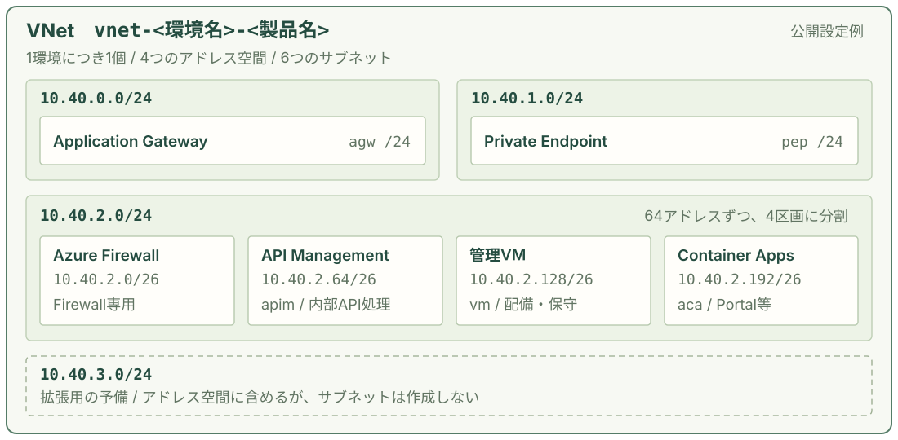
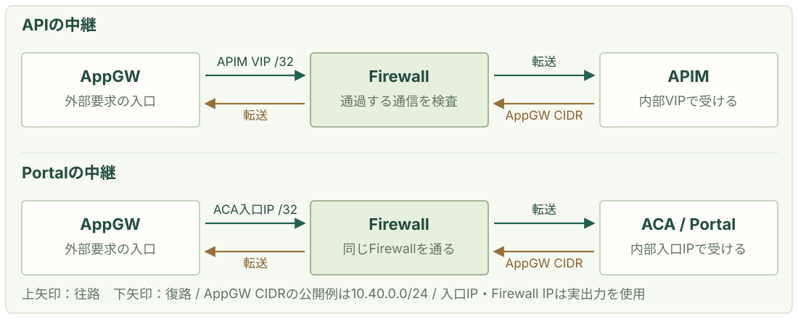
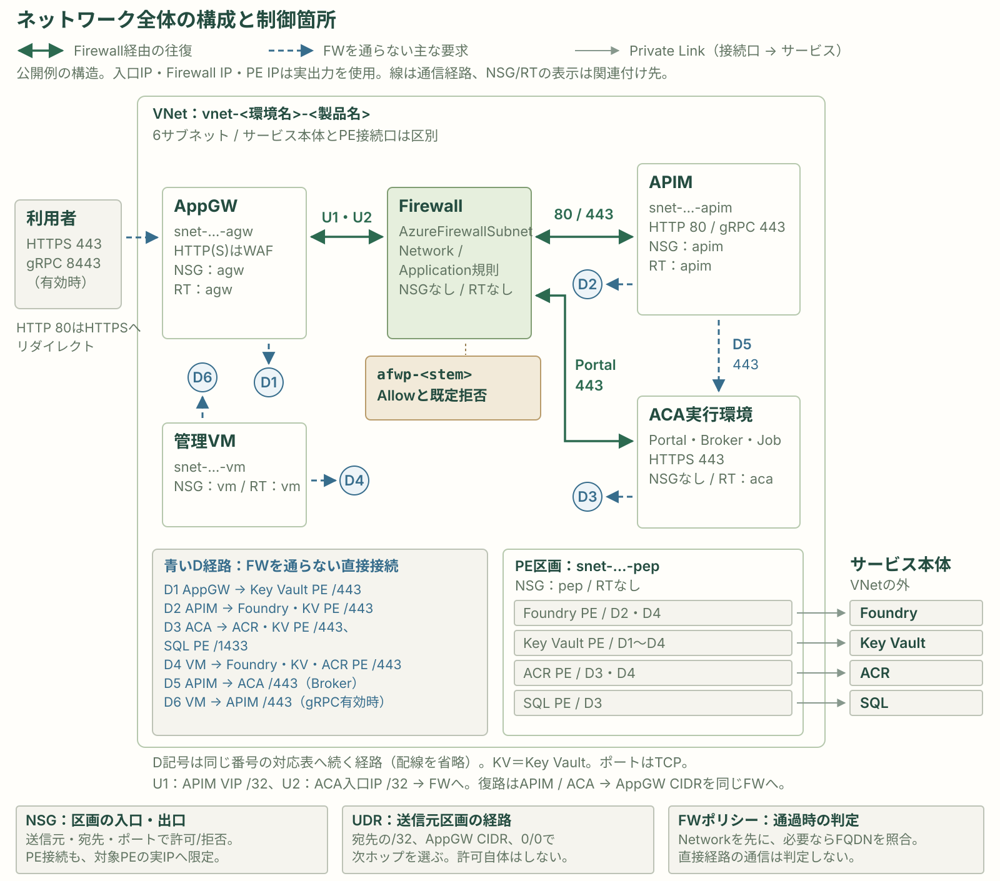
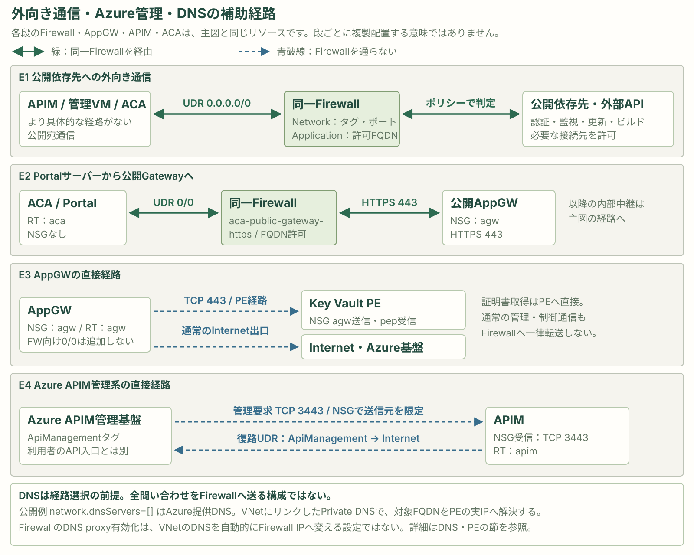

安全な稼働を支える、
ネットワーク基盤の構造。
egakumi-coreは、外部から要求を受ける入口、APIの処理、管理作業、サービスへの閉域接続を、役割ごとのサブネットへ配置します。基盤管理者が、どこに何を置き、どの区画の通信を制御するか説明できることが、この章の目的です。
最初に、VNet・アドレス空間・サブネットを読む
1環境につき1つのVNetを作り、その中に6つのサブネットを設けます。公開入口と内部の処理・管理を分けることで、通信の送信元・宛先を区画ごとに識別し、必要な制御を設定できるようにします。
配置と通信制御を結びつける
サブネットに分けるだけでは、区画間の通信を遮断できません。この基盤ではNSGで許可・拒否、UDRで経路、Firewallで通過する通信の検査・制御を設定します。まず、その設定対象となる区画を押さえます。
この資料で扱う構成
企業ハブへの接続を追加する前の、独立したVNetを扱います。以下の名前とCIDRは、リポジトリの公開設定例に基づきます。稼働中のAzureから取得した設定値ではありません。
Azureの基本仕様：VNet内の通信フィルタリング。DNS・PEとNSG・UDR・Firewall、出口IP・通信ログ・保守接続を順に確認し、全体図へつなげます。最後にハブ接続時の変更点をまとめます。
1つのVNetに、6つの区画をつくる。
VNet（Virtual Network）はAzure上の仮想ネットワークです。アドレス空間はそのVNetで使うIPアドレス範囲、サブネットはアドレス空間の中から切り出し、リソースを配置する区画です。

VNet名は vnet-<環境名>-<製品名>、配置先はネットワーク用リソースグループ rg-<環境名>-<製品名>-nw です。本番の公開例では vnet-prod-egakumi になります。
4つのアドレス空間と、その使い分け。
公開設定例では、同じVNetへ次の4範囲を登録します。10.40.2.0/24 のみを4つに分割し、残りは専用区画と将来の拡張に使います。
| アドレス空間（CIDR） | 含まれるIPアドレス | 割り当て |
|---|---|---|
10.40.0.0/24 | 10.40.0.0 〜 10.40.0.255 | Application Gateway用の1サブネット。 |
10.40.1.0/24 | 10.40.1.0 〜 10.40.1.255 | Private Endpoint用の1サブネット。 |
10.40.2.0/24 | 10.40.2.0 〜 10.40.2.255 | Firewall・APIM・管理VM・Container Apps用に、/26 を4個配置。 |
10.40.3.0/24 | 10.40.3.0 〜 10.40.3.255 | 拡張用の予備。VNetの範囲には含め、サブネットは作成しない。 |
CIDRで範囲の大きさを表す
CIDRは 10.40.2.0/26 のような表記です。IPv4の32ビットのうち、/24 は先頭24ビットが共通で256アドレス、/26 は先頭26ビットが共通で64アドレスです。/24 1個に /26 が4個収まります。
範囲の総数と割当可能数を分ける
Azureはサブネットごとに先頭4個と末尾1個を予約します。/24 は251個、/26 は59個が予約分を除く数です。サービスがさらにIPを使用するため、この数がそのままアプリやVMの配置可能台数にはなりません。
IP予約の仕様：Azure Virtual Network FAQ。表のIP範囲には予約アドレスも含みます。
役割ごとに、配置先を分ける。
名前の <stem> は <環境名>-<製品名> を表します。以下のCIDRは公開設定例です。10.40.2.0/24 は、末尾の値を0・64・128・192から始める4区画に分けます。
| サブネット名 | CIDR / 含まれる範囲 | 配置するものと役割 |
|---|---|---|
snet-<stem>-agw | 10.40.0.0/24.0 〜 .255 | Application Gateway 外部からのWeb・API要求を受ける入口。内部のAPI処理や管理VMと区画を分ける。 |
snet-<stem>-pep | 10.40.1.0/24.0 〜 .255 | Private Endpoint（PE） Foundry・Key Vault・ACR・SQLへの接続口。VNet内のプライベートIPでサービスへ接続する。 |
AzureFirewallSubnet | 10.40.2.0/26.0 〜 .63 | Azure Firewall 経路でFirewallへ向けた通信を検査・制御する専用区画。この名前を固定で使う。 |
snet-<stem>-apim | 10.40.2.64/26.64 〜 .127 | API Management（APIM） Internal VNetモードのAPI処理基盤。認証・ポリシー適用・バックエンド呼出しを担う。 |
snet-<stem>-vm | 10.40.2.128/26.128 〜 .191 | 管理VM Linux管理VMを置き、構築・配備・保守作業を行う。 |
snet-<stem>-aca | 10.40.2.192/26.192 〜 .255 | Azure Container Apps（ACA） Portalなどの共用実行環境。内部環境として作り、サブネットを Microsoft.App/environments へ委任する。 |
PE区画に置くのはサービスへの接続口です。Foundry・Key Vault・ACR・SQLのサービス本体が、このサブネットへ配置されるわけではありません。リソースグループの分類と、VNet内のネットワーク区画も別のものです。
構成を、実際の定義へ対応付ける。
IP計画は network.addressSpaces と network.subnetPrefixes に指定します。構築時に範囲の包含・重複などを検査し、VNetとサブネットの定義へ渡します。
| 確認する内容 | 担当ファイル |
|---|---|
| 名前とIP計画の公開例 | params/production.example.json / params/test.example.json環境名・製品名、4つのアドレス空間、6つのサブネットのCIDR。 |
| 入力検査と基盤の組み立て | scripts/deployment/helpers/configuration.py / infra/main.bicepサブネットがVNetの範囲内に収まり、互いに重ならないことを検査。環境名と製品名から名前を組み立てる。 |
| VNetとサブネットの作成 | infra/modules/network.bicepVNetと6サブネットを定義し、NSG・ルートテーブルの関連付け、ACAの委任を設定する。 |
| 区画への配置・接続 | application-gateway.bicep / services.bicep / management.bicep / portal-platform.bicepそれぞれAppGW・APIM・管理VM・ACAを、対象サブネットへ配置する。 |
| PE区画の接続口 | services-private-endpoints.bicep（Foundry・Key Vault） / portal-network.bicep（ACR） / credential-broker-network.bicep（SQL）。 |
構造は「1つのVNet → 4つのアドレス空間 → 6つのサブネット」です。予備の 10.40.3.0/24 は未区画のまま残します。保守時は、対象リソースの所属サブネットと、その区画へ設定した通信制御を対応付けて確認します。
企業ハブへの接続を追加する場合は、企業ネットワーク接続の手順を参照します。接続先とのアドレス重複・ピアリング・経路・DNSは、独立VNetの基本構成に加えて設計する項目です。
接続先の名前を、どのDNSで解決するか。
アプリはサービスのFQDNを使って接続し、DNSが返したIPへ通信します。VNetのクライアント向けDNSと、Firewall自身がFQDNルールに使うDNSは別の設定です。公開params例はどちらも空配列で、Azure提供DNSを使います。
| 設定 | 反映する先と意味 |
|---|---|
network.dnsServers | VNetの dhcpOptions.dnsServers。[] はAzure提供DNS（168.63.129.16）。独自DNSのIPv4を指定した場合は、そのDNSから公開名・Private DNS名を解決できる構成が必要。 |
network.firewall.dnsServers | Firewallポリシーの上流DNS。キーが未指定ならVNetの入力を使う。明示した空配列はAzure提供DNSなので、VNetが独自DNSでも同じ設定を自動で継承するわけではない。 |
Firewallの enableProxy:true | FirewallのDNS proxyを有効にする。これだけで、VNetのDNSサーバーや全クライアントの問い合わせ先をFirewall IPへ変更する実装ではない。 |
同じサービス名でも、公開IPを返すかPEのプライベートIPを返すかで、経路と通信制御の対象が変わります。NSGやFirewallの許可だけを直す前に、通信元で名前解決した結果を確認します。Private DNSゾーンは名前の対応表で、パケットを中継する装置ではありません。
AppGW・APIM・管理VMのNSGには、設定したDNS宛てのTCP/UDP 53を許可します。Firewallの custom-dns 規則は独自DNS指定時に作られますが、実際にFirewallを通る問い合わせだけがそこで判定されます。
Azure提供DNSとPrivate DNSの連携：Azure Private Endpoint DNS統合。
出典：infra/modules/network.bicep / params/production.example.json / params/test.example.json
サービス本体への入口を、PE区画に置く。
Private Endpoint（PE）はAzureサービスへプライベートIPで接続する入口です。この基盤ではFoundry・Key Vault・ACR・SQL用の4つを snet-<stem>-pep に作ります。サービス本体をこのサブネットへ移す構成ではありません。
| PE名 / groupId | 接続先と目的 | DNSとIPの扱い |
|---|---|---|
pe-<stem>-foundryaccount | Foundryの各API群へ閉域接続する。 | 1つのPEを3つのFoundry用DNSゾーンへ関連付ける。IPが1個だけとは決めつけない。 |
pe-<stem>-kvvault | 証明書・秘密情報をKey Vaultから参照する。 | Key Vault用DNSゾーンと関連付け、実際のPE IP群を許可先へ渡す。 |
pe-<stem>-acrregistry | ACAの起動や管理VMの配備でイメージを取得・登録する。 | ACR用DNSゾーンと関連付ける。データエンドポイントも有効なので、レジストリとデータ用の名前・IPを1個に決めつけない。 |
pe-<stem>-sqlsqlServer | Portal・認証窓口の共用SQLへ接続する。 | SQL用DNSゾーンと関連付ける。SQLはProxy接続でTCP 1433を使う。 |
PE作成後に、Azureが返した実NIC IDから全IP構成を読み取ります。private-endpoint-addresses.bicep の出力を平坦化・重複除去し、後段のNSGなどへ渡します。サブネット名からIPを推測したり、先頭のIPだけを使ったりする実装ではありません。
Foundry・Key Vault・ACR・SQL本体は公開ネットワークアクセスを無効にしています。さらにFoundryのローカルキー無効、Key VaultのRBAC、ACRのAcrPull、SQLのEntra認証なども別に設定します。Key VaultにはAPIMの証明書管理面用trusted-services例外が条件付きであり、一般の公開接続や任意の操作を許可するものとは区別します。
出典：infra/modules/services-private-endpoints.bicep / infra/modules/portal-network.bicep / infra/modules/credential-broker-network.bicep / infra/modules/private-endpoint-addresses.bicep / infra/modules/services.bicep / infra/modules/portal-registry.bicep / infra/modules/shared-sql.bicep
通常の接続先名から、PEのIPを返す。
Private DNSゾーンには、Private Link用の名前とPEのIPの対応を持たせます。「ゾーンとVNetのリンク」と「PEのDNS zone group」は別の関連付けで、両方を準備します。
| Private DNSゾーン | 関連付けるPE / 用途 |
|---|---|
privatelink.cognitiveservices.azure.com | Foundry PE / Cognitive系API |
privatelink.openai.azure.com | 同じFoundry PE / OpenAI系API |
privatelink.services.ai.azure.com | 同じFoundry PE / Services系API |
privatelink.vaultcore.azure.net | Key Vault PE / 証明書・秘密情報 |
privatelink.azurecr.io | ACR PE / レジストリ・データ取得 |
privatelink.database.windows.net | SQL PE / データベース接続 |
VNetリンク：名前を解決する範囲
すべてのゾーンをこのVNetへリンクし、registrationEnabled:false にします。VMのホスト名を自動登録するリンクではありません。独自DNSを使う場合は、VNetリンクを作るだけではそのDNSへ転送設定は入りません。
DNS zone group：PEとレコードの連携
PEの privateDnsZoneGroups/default にゾーンIDを指定し、PEとDNSレコードを連携させます。PE用Aレコードを独自の privateDnsZones/A として別に手書きする定義はありません。Foundryは3ゾーンを同じzone groupへ含めます。
<vault>.vault.azure.net<vault>.privatelink.vaultcore.azure.netこれはDNSの解決順を示す例で、データ通信の経路ではありません。アプリは通常の接続先FQDNを使い、得られたPEのIPへ接続します。Private EndpointのDNS仕様 / VNetリンクの仕様。
Foundry・Key Vaultの4リンクには resolutionPolicy:Default を明示します。他のリンクは属性を省略し、Internet fallbackを有効化する指定はしていません。ゾーン内にない名前が常に公開DNSへ逃がされるとは扱いません。
出典：infra/modules/network.bicep / infra/modules/services-private-endpoints.bicep / infra/modules/portal-network.bicep / infra/modules/credential-broker-network.bicep
内部入口の名前と、公開入口の名前を分ける。
Private Link用6ゾーンに加え、APIM・ACAの内部入口向けに通常のPrivate DNSゾーンを2つ作ります。計8ゾーンを同じVNetへリンクします。APIM・ACA自身のPrivate Endpointを作る構成ではありません。
| 名前・ゾーン | レコードと解決先 | 設定の目的 |
|---|---|---|
| APIM自身の実FQDN 例： <apim名>.azure-api.net | 同じ名前のPrivate DNSゾーンを作り、@ A → APIM実内部VIP。TTLは network.dnsTtl、公開configは300秒。 | AppGWやVNet内クライアントが、そのAPIM名を内部VIPへ解決する。azure-api.net 全体を独自ゾーンで覆わない。 |
ACA環境の実 defaultDomain | その名前のPrivate DNSゾーンに、* A → ACA環境の実 staticIp。TTL固定300秒。 | ca-<stem>-portal.<defaultDomain> などの内部アプリ名を解決する。この定義に @ Aはない。 |
| 利用者向けGateway・Portalの公開ホスト名 | 公開DNSのAレコード → AppGWの公開IP。 | 利用者は公開入口へ接続する。APIMの内部VIPやACA内部IPへ直接向ける名前ではない。公開DNSは構築方式に応じてDNS担当者等が設定する。 |
APIMの @ とACAの * はBicepが明示的に作るAレコードです。PEのDNS zone groupによるレコード連携とは別です。この2ゾーンのVNetリンクも registrationEnabled:false です。
APIMはInternal VNetモードですが、管理面もあるため publicNetworkAccess:Enabled の定義です。「内部名を持つすべてのサービスがPNA Disabled」と一括では説明しません。ACAは internal:true の環境を使い、PEではなく環境の内部入口IPへ解決します。
出典：infra/modules/network-bindings.bicep / infra/modules/portal-dns.bicep / infra/modules/portal-network-bindings.bicep / infra/modules/portal-platform.bicep / infra/modules/services.bicep / docs/setup/03-public-dns.md
名前解決と通信の確認を、送信元ごとに行う。
手元PCで名前が引けることだけでは、AppGW・APIM・ACA・管理VMが同じ答えを使うとは限りません。実際の通信元、問い合わせるDNS、ゾーンとリンク、レコード、接続先IPをつなげて確認します。
| 確認対象 | 期待する対応と担当ファイル |
|---|---|
| VNet・FirewallのDNS入力 | network.dnsServers と network.firewall.dnsServers、空配列・未指定の意味。network.bicep と対象環境paramsを確認。 |
| PEの接続と実IP | 接続先リソース・groupId・接続状態、PEが返したNICと全IP。名前解決結果が対象PEのIP群と一致するかを確認。 |
| Private DNSのレコード連携 | 6つのPrivate LinkゾーンのVNetリンクとPE zone group。自動連携しているレコードを別IaCで二重管理しない。 |
| APIM・ACAの内部名 | APIMの @ → 実内部VIP、ACAの * → 実static IP。どのゾーンを見ているかとTTLも確認。 |
| 名前解決後の接続 | PEのIPが返ったら、該当NSG・具体的な経路・サービス認証へ進む。DNSが正しくても、到達や操作権限が自動で許可されるわけではない。 |
そのDNSからPrivate DNSを解決できる転送・ゾーン参照と、TCP/UDP 53の経路・許可を先に用意します。VNetピアリングだけでPrivate DNSの解決設定が共有されるわけではありません。公開名、Private Link名、APIM・ACA内部名をそれぞれ確認します。
切替後は、APIMのネットワーク構成適用、AppGWのStop/Start、管理VMのDNS再取得・必要な再起動など、各サービスの反映方法を保守時間に確認します。企業ハブへ接続するときの変更点は、この章の最後の「ハブ＆スポークへの対応」でまとめます。
この資料でAzure実環境のDNS問い合わせ・PE接続状態を取得したわけではありません。構築定義に基づく確認観点です。企業DNSへの切替手順も参照します。
出典：infra/modules/network.bicep / infra/modules/network-bindings.bicep / infra/modules/portal-dns.bicep / infra/modules/private-endpoint-addresses.bicep / docs/setup/07-hub-spoke.md
4つのNSGで、区画ごとの通信を制御する。
NSG（Network Security Group）は、送信元・宛先・ポート・プロトコルで通信を許可・拒否する規則の集まりです。この基盤は4つのNSGをサブネットへ関連付けます。<stem> は環境名と製品名の共通部分です。
| サブネット | 関連付けるNSG | 独自の終端拒否（優先度4096） |
|---|---|---|
snet-<stem>-agw | nsg-<stem>-agw | 受信：あり / 送信：なし |
snet-<stem>-apim | nsg-<stem>-apim | 受信・送信：ともにあり |
snet-<stem>-pep | nsg-<stem>-pep | 受信：あり / 送信：なし |
snet-<stem>-vm | nsg-<stem>-vm | 受信・送信：ともにあり |
AzureFirewallSubnet | 関連付けなし | NSGによる制御なし。Firewallポリシーで通過する通信を制御する。 |
snet-<stem>-aca | 関連付けなし | NSGによる制御なし。経路上のFirewallと、接続先PEのNSGなどで制御する。 |
たとえばAPIM → Foundry PEの新規接続では、APIM用NSGの送信規則と、PE用NSGの受信規則を両方確認します。PE区画は privateEndpointNetworkPolicies: NetworkSecurityGroupEnabled にして、PEにNSGを適用します。
NSGの許可は、通信経路やサービスの認証成功を保証しません。実際の接続にはUDR・Firewall・DNS・接続先の認証も関係します。ACAへのPortal入口を許可するFirewall規則を、ACA用NSGの規則として読むことはできません。
出典：network.bicep / network-bindings.bicep / portal-network.bicep
小さい優先度から照合し、最初の一致で決める。
以下のルール表では、ポートは宛先ポートです。送信元ポートはすべて *（任意）。受信 / 100 は受信方向・優先度100を表し、同じNSGの同じ方向で数字の小さい規則から評価します。
| 評価する順番 | この基盤での意味 |
|---|---|
| ① 個別の許可・拒否 | 通常の許可は100〜410。機能を無効にしたときは、同じ allow-* 名でもAccessが Deny になる規則がある。空のクライアント・運用元配列に対する拒否は4080。 |
| ② 独自の終端拒否 / 4096 | deny-other-inbound / deny-other-outbound。送受信元・ポート・プロトコルはすべて任意で、それ以前の規則に一致しない通信を拒否する。適用する方向は前ページの表のとおり。 |
| ③ Azureの既定ルール / 65000以降 | VNet内の受信・送信許可、AzureLoadBalancerからの受信許可、Internetへの送信許可など。4096の拒否がある方向は、通常これらへ到達する前に判定が終わる。 |
許可済み接続の応答を追跡する
NSGはステートフルです。許可した接続への応答のために、逆方向へ同じ許可を追加する必要はありません。ルール変更後の確認は、既存接続の継続だけで判断せず、新しい接続で行います。
サービス・タグはIP範囲のまとまり
Storage・Sql・AzureMonitor などはAzureが管理するIP範囲です。自分たちのリソース1個や、FQDNの一覧を表す名前ではありません。Web通信のFQDN許可はFirewall側で設定します。
優先度400の allow-dns-tcp と410の allow-dns-udp で、送信元 * → 設定したDNSサーバーのTCP/UDP 53を許可します。network.dnsServers=[] の公開例では宛先は 168.63.129.16。PE用NSGにはこの2規則を追加しません。Azure提供DNSなど一部の基盤通信には、通常のNSG処理の対象外となるものがあります。
評価順・応答・基盤通信の仕様：Azure NSGの概要。
公開入口を受け、内部の処理先へ中継する。
nsg-<stem>-agw はWeb・API入口とAzure基盤の受信を許可します。表の「AppGW区画」「APIM区画」は、それぞれのサブネットCIDRです。特記した条件以外はAllowです。
| 方向・優先度 / 規則名 | 送信元 → 宛先 / 宛先ポート | 目的と動作 |
|---|---|---|
受信 / 100 / 空なら4080allow-client-web | clientAddressPrefixes → AppGW区画TCP 80・443 | 利用者のWeb/API要求を許可。配列が空ならDeny。公開例は 0.0.0.0/0 で全IPv4から許可。 |
受信 / 110allow-gateway-manager | GatewayManager → *TCP 65200–65535 | AzureによるApplication Gatewayの管理通信を許可。 |
受信 / 120allow-load-balancer | AzureLoadBalancer → *全プロトコル・全ポート | Azure負荷分散基盤の通信を許可。 |
受信 / 150allow-client-grpc | clientAddressPrefixes → AppGW区画TCP 公開gRPCポート（公開例8443） | gRPC有効かつクライアント配列が空でないときAllow。それ以外はDeny。 |
受信 / 194allow-certificate-observer | Firewall公開IPの /32 → AppGW区画TCP 443 | 管理側から公開入口の証明書を確認する専用規則。certificatePublicProbeEnabled がtrueならAllow、falseならDeny。 |
| 方向・優先度 / 規則名 | 送信元 → 宛先 / 宛先ポート | 目的と動作 |
|---|---|---|
送信 / 100allow-apim-http | AppGW区画 → APIM区画 TCP 80 | 通常のAPI要求を内部APIMへ中継する。 |
送信 / 110allow-key-vault | AppGW区画 → Key Vault PEの実IP群 TCP 443 | 公開入口で使う証明書を取得する。 |
送信 / 120allow-apim-grpc | AppGW区画 → APIM区画 TCP 内部gRPCポート（443） | gRPC有効ならAllow、無効ならDeny。 |
送信 / 200allow-internet | AppGW区画 → Internet全プロトコル・全ポート | 通常のAppGW v2の基盤要件に合わせ、Internet出口を維持する。 |
送信には共通DNS規則もあります。表にない送信がすべて拒否される構成ではなく、Azureの既定送信規則も評価されます。AppGW → ACAのTCP 443にも専用のNSG許可はなく、NSG上は既定のVNet内送信許可で通り、経路上のFirewallで制御します。証明書監視規則とクライアント許可の重なりは、後の「設定による切り替え」で説明します。
出典：network.bicep / network-bindings.bicep / portal-network.bicep
APIの入口と、バックエンドへの接続を絞る。
nsg-<stem>-apim は、通常APIの入口をAppGW区画へ限定します。gRPCの比較確認には管理VM単体の実IPも使います。NSGのAPIM宛先は、内部ロードバランサー背後のノードを含むAPIM区画全体です。
| 方向・優先度 / 規則名 | 送信元 → 宛先 / 宛先ポート | 目的と動作 |
|---|---|---|
受信 / 100allow-agw-api | AppGW区画 → APIM区画 TCP 80 | 通常APIの中継要求を許可。別区画からの同じTCP 80は、この規則では許可しない。 |
受信 / 110allow-apim-management | ApiManagement → APIM区画TCP 3443 | Azure側のAPIM管理通信を許可。 |
受信 / 120allow-load-balancer | AzureLoadBalancer → APIM区画TCP 6390 | APIM基盤の負荷分散・正常性確認を許可。 |
受信 / 130allow-counter-sync-inbound | APIM区画 → APIM区画 UDP 4290 | APIMインスタンス間のカウンター同期を許可。 |
受信 / 140allow-agw-grpc | AppGW区画 → APIM区画 TCP 内部gRPCポート（443） | gRPC有効ならAllow、無効ならDeny。 |
受信 / 150allow-management-grpc | 管理VMの実IP → APIM区画 TCP 内部gRPCポート（443） | 公開経路と内部経路を比較確認するための接続。gRPC有効ならAllow、無効ならDeny。 |
| 方向・優先度 / 規則名 | 送信元 → 宛先 / 宛先ポート | 目的と動作 |
|---|---|---|
送信 / 100allow-private-backends | APIM区画 → Foundry PEの実IP群 TCP 443 | AIバックエンドのAPIを呼び出す。 |
送信 / 110allow-key-vault-pe | APIM区画 → Key Vault PEの実IP群 TCP 443 | 証明書・秘密参照用。実効設定の apimKeyVaultAccessEnabled がtrueならAllow、falseならDeny。 |
送信 / 176allow-credential-broker | APIM区画 → ACA環境の実際の内部IP TCP 443 | 認証窓口（Credential Broker）への照会。credentialProfiles が空でないときだけ作成。 |
受信・送信とも、先に一致する規則がない通信を4096で拒否します。送信のAzure基盤向け許可は次ページへ続きます。Foundry・Key Vaultには複数のPE IPがあるため、作成後に取得した全IPを使います。APIMのNSG宛先区画と、UDR・Firewallが使うAPIMの実VIPは別の指定です。
出典：network.bicep / network-bindings.bicep / credential-broker-network.bicep
APIを動かすための、基盤通信を残す。
APIMは利用者のAPI中継以外にも、認証・監視・設定保存・時刻同期などの通信を必要とします。以下はすべてAPIM区画を送信元とするAllow規則です。宛先はサービス・タグ、またはAPIM区画のCIDRで指定します。
| 方向・優先度 / 規則名 | 送信元 → 宛先 / 宛先ポート | 目的と動作 |
|---|---|---|
送信 / 200allow-storage | Storage / TCP 443 | APIMプラットフォームのストレージ依存通信。 |
送信 / 210allow-sql-platform | Sql / TCP 1433 | APIMプラットフォームのSQL依存通信。Portal・認証窓口のアプリ用SQL接続とは別。 |
送信 / 220allow-key-vault-platform | AzureKeyVault / TCP 443 | APIMプラットフォームのKey Vault依存通信。前ページのPE宛先規則とは別。 |
送信 / 230allow-monitor | AzureMonitor / TCP 1886・443 | 監視データを送る。 |
送信 / 235allow-monitor-event-hubs | EventHub / TCP 443・5671・5672 | APIM監査ログのEvent Hubs側への送信。AzureMonitorタグだけではこの宛先を含まない。 |
送信 / 240allow-entra | AzureActiveDirectory / TCP 443 | Entra IDへの認証通信。 |
送信 / 250allow-credential-manager | AzureConnectors / TCP 443 | Credential Managerの依存通信。 |
送信 / 260allow-web-dependencies | Internet / TCP 80・443 | Web依存通信。NSGはIP・ポートで許可し、経路上のFirewallでFQDNを制御する。 |
送信 / 270allow-time-sync | Internet / UDP 123 | APIMプラットフォームの時刻同期。管理VM用NTP設定とは別に維持する。 |
送信 / 280allow-counter-sync-outbound | APIM区画 / UDP 4290 | 同じAPIM区画内のカウンター同期。 |
たとえばInternet宛てTCP 25は、標準の許可規則に一致しないため拒否されます。一方、TCP 443がNSGを通っても、任意のWebサイトへ接続できるとは限りません。Firewall側で選択されるNetwork・Application規則の判定も必要です。Network許可に一致した場合は、ApplicationのFQDN照合へ進みません。
サービスの接続口に、必要な通信だけを入れる。
nsg-<stem>-pep は、PE宛ての受信をサービス別・接続元別に許可します。「PEの実IP群」は作成したPEのNICから取得した全IPを指し、サブネット全体を宛先に許可する指定ではありません。以下はすべてAllowです。
| 方向・優先度 / 規則名 | 送信元 → 宛先 / 宛先ポート | 目的と動作 |
|---|---|---|
受信 / 100allow-apim-foundry | APIM区画 → Foundry PEの実IP群 TCP 443 | APIMからAIバックエンドへ接続する。 |
受信 / 110allow-key-vault | AppGW区画・APIM区画 → Key Vault PEの実IP群 TCP 443 | 証明書・秘密情報の参照。apimKeyVaultAccessEnabled=false なら送信元からAPIM区画を除外し、AppGW区画だけを許可。 |
受信 / 140allow-vm-https | 管理VMの実IP → Foundry・Key Vault PEの実IP群 TCP 443 | 管理VMから閉域の疎通確認・保守を行う。 |
受信 / 160allow-aca-acr | ACA区画・管理VM区画 → ACR PEの実IP群 TCP 443 | ACAのイメージ取得と、管理VMによるイメージのビルド・配布。 |
受信 / 175allow-credential-broker-sql | ACA区画 → SQL PEの実IP群 TCP 1433 | Portal・認証窓口などが共用するSQLへ接続。Brokerの有効・無効にかかわらず作成する。 |
受信 / 177allow-credential-broker-vault | ACA区画 → Key Vault PEの実IP群 TCP 443 | ACA側から秘密情報を参照する。Brokerの有効・無効にかかわらず作成する。 |
標準構成では、AppGW → Foundry PEのTCP 443、管理VM → SQL PEのTCP 1433など、表にない組合せの新規受信を拒否します。許可した接続への応答はステートフルに扱います。PE用NSGへ送信の4096拒否や共通DNS規則は追加していません。
同じPE区画に複数サービスの接続口があっても、区画へ入ればすべてのPEへ接続できるわけではありません。接続元と、対象サービスの実IP・宛先ポートの組合せで判定します。
出典：network-bindings.bicep / portal-network.bicep / credential-broker-network.bicep
運用元と作業先を、分けて許可する。
nsg-<stem>-vm は、運用者から管理VMへの接続と、管理VMが作業に使う送信を制御します。表中の「管理VM区画」はサブネット全体、「管理VMの実IP」はVM単体のIPです。
| 方向・優先度 / 規則名 | 送信元 → 宛先 / 宛先ポート | 目的と動作 |
|---|---|---|
受信 / 100 / 空なら4080allow-operator-management | operatorAddressPrefixes → 管理VMの実IPoperatorProtocol / operatorPorts（公開例TCP 22） | 指定した運用元からのSSHなどを許可。公開例は運用元配列が空のためDeny。別の追加規則があれば、その優先順位も評価する。 |
送信 / 100allow-private-services | 管理VM区画 → Foundry・Key Vault PEの実IP群 TCP 443 | 閉域サービスの確認・保守。 |
送信 / 120allow-apim-grpc-comparison | 管理VMの実IP → APIM区画 TCP 内部gRPCポート（443） | 内部gRPC経路の比較確認。有効ならAllow、無効ならDeny。 |
送信 / 170allow-runner-acr | 管理VM区画 → ACR PEの実IP群 TCP 443 | コンテナイメージを取得・登録する。PE側の受信160と対になる。 |
送信 / 300allow-approved-entra | 管理VM区画 → AzureActiveDirectoryTCP 443 | Entra IDによる認証。 |
送信 / 310allow-approved-management-api | 管理VM区画 → AzureResourceManagerTCP 443 | Azureリソースの構築・管理操作。 |
送信 / 320allow-approved-monitor | 管理VM区画 → AzureMonitorTCP 443 | 監視データ送信。 |
送信 / 330allow-approved-agent-storage | 管理VM区画 → StorageTCP 443 | 管理・監視エージェント用のストレージ通信。 |
送信 / 350allow-web-dependencies | 管理VM区画 → InternetTCP 80・443 | OS更新・ビルドなどのWeb依存通信。FQDNの許可はFirewallで制御する。 |
送信 / 360allow-time-sync | 管理VM区画 → ntpAddressPrefixesUDP 123 | 管理VMの時刻同期。公開例の宛先はInternet。 |
共通DNSの送信400・410を追加し、受信・送信とも4096で未許可通信を拒否します。network.managementAdditionalSecurityRules はこのNSGへ追加する環境固有規則です。公開例は空で、上の表は追加規則がない標準構成を示します。NSGのSSH許可を追加しても、管理VMまでの到達経路やログイン権限は別に必要です。
出典：network.bicep / network-bindings.bicep / portal-network.bicep
ルール名だけでなく、Accessと優先度を見る。
同じ規則名のままAllowからDenyへ変える設定と、条件付きで作成する設定があります。以下の「公開例」は、本番・テストのconfigとparamsの組合せです。実環境の有効値は構築時の入力・生成結果で確認します。
| 設定と公開例 | 規則への反映 |
|---|---|
network.clientAddressPrefixes公開例： ["0.0.0.0/0"] | Web受信100の許可元。空配列ならWeb規則をDeny/4080へ変更し、公開gRPC受信150もDenyにする。Azure基盤・証明書監視など、別の受信規則は残る。 |
network.operatorAddressPrefixes公開例： [] | 管理受信規則をDeny/4080にする。運用元を指定するとAllow/100になる。プロトコル・ポートは公開configでTCP 22。 |
gateway.grpc.enabled公開例： true / 公開8443・内部443 | AppGWの受信150・送信120、APIMの受信140・150、管理VMの送信120を切り替える。無効時は同名規則をDenyへ更新。公開受信はクライアント配列が空でもDeny。 |
network.apimKeyVaultAccessEnabled公開例： true | APIMのPE向け送信110を切り替え、PE側の受信110からAPIMを含める・除外する。APIMの基盤向けAzureKeyVault規則220や、Key VaultのIAMを一括で切り替える設定ではない。入力検査ではgRPC等が必要とする有効設定も確認する。 |
network.certificatePublicProbeEnabled公開例： true | AppGWの証明書監視用規則194をAllow/Denyへ切り替える。より小さい優先度のWeb許可が同じ通信に一致すれば、その判定が先になる。 |
生成される credentialProfiles空でないときBroker通信を追加 | APIM送信176は、プロファイルが空でないときだけ作成。SQL・Key VaultのPE受信175・177は常時作成。送信176は無効時に同名Denyへ変える実装ではないため、既存許可の残存は実ルールで確認する。 |
公開例のWeb許可100は全IPv4のTCP 443にも一致します。そのため、証明書監視194をDenyにしても、Firewall公開IPからのTCP 443を必ず拒否するとはいえません。逆にクライアント配列を空にしても、証明書監視194がAllowなら、その通信はWeb拒否4080より先に許可されます。
出典：network.bicep / network-bindings.bicep / credential-broker-network.bicep
送信と受信を対にして、判定を確かめる。
以下は、追加管理規則が空で、gRPC有効という公開設定例での、新規接続に対するNSGの判定です。実環境での疎通試験結果ではありません。
| 新しく開始する通信 | NSGの判定と目的 |
|---|---|
| AppGW → APIM / TCP 80 | 許可：AppGW送信100、APIM受信100。通常APIの内部中継。 |
| 管理VM → APIM / TCP 80 | 拒否：管理VM送信4096に一致する。APIM受信側にも管理VMからのTCP 80の許可はなく、受信4096に一致する。 |
| 管理VM → APIM / TCP 443 | 許可：管理VM送信120、APIM受信150。gRPCの内部比較用。gRPC無効時はそれぞれDenyへ更新する。 |
| APIM → Foundry PE / TCP 443 | 許可：APIM送信100、PE受信100。AIバックエンド呼出し。AppGWから同じFoundry PEへの新規接続はPE受信4096で拒否。 |
| ACA → SQL PE / TCP 1433 | 許可：ACA区画にはNSGなし、PE受信175で許可。管理VM → SQL PE / TCP 1433は、標準許可がなく拒否。 |
| APIM・管理VM → Internet / TCP 25 | 拒否：送信の標準許可に一致せず4096へ進む。AppGWには同じ送信終端拒否を設定していない。 |
ルール定義を確認する
network.bicep は関連付け・基盤・DNS規則。network-bindings.bicep は実IPを使う規則・終端拒否。portal-network.bicep はACR、credential-broker-network.bicep はSQL・Key Vault・Broker向け規則を追加します。
設定とAzure上の有効ルールを照合する
params/production.example.json と config/production.json は本番の公開例です。保守時は対象環境の入力、関連付け先NSG、ルールの方向・Access・優先度・実IPを照合します。変更後は新規接続で確認します。
NSGを通過する通信でも、経路上のFirewallや接続先の認証で拒否される場合があります。UDRの経路は次のページから、Firewallポリシーの判定はFirewallポリシーの節で説明します。
出典：network.bicep / network-bindings.bicep / portal-network.bicep / credential-broker-network.bicep
4つのルートテーブルで、次の転送先を決める。
UDR（User Defined Route）は、宛先IPの範囲に対して「次にどこへ送るか」を指定する経路です。ルートテーブルをサブネットへ関連付け、その区画から出る通信に適用します。NSGの許可・拒否と合わせて、必要な通信を検査経路へ送る役割を担います。
| サブネット | ルートテーブル | 標準の独自経路と役割 |
|---|---|---|
snet-<stem>-agw | rt-<stem>-agw | 2本。APIM・ACA環境の内部入口IPだけをFirewallへ転送する。 |
snet-<stem>-apim | rt-<stem>-apim | 3本。AppGWへの復路と外向き既定経路をFirewallへ。Azure管理通信の直接経路も残す。 |
snet-<stem>-vm | rt-<stem>-vm | 1本。管理VMの外向き既定経路をFirewallへ転送する。 |
snet-<stem>-aca | rt-<stem>-aca | 2本。ACAの外向き既定経路とAppGWへの復路をFirewallへ転送する。 |
snet-<stem>-pep | 関連付けなし | PEへ接続するシステム経路を維持する。PE側はNSGを適用し、独自のルートテーブルは付けない。 |
AzureFirewallSubnet | 関連付けなし | この基盤の独自ルートテーブルを付けず、Firewall自身の転送先に同じFirewallを再指定しない。 |
たとえば「APIMの内部VIP /32 → FirewallのプライベートIP」は、APIM宛てパケットの次の転送先をFirewallにする指定です。Firewallを最終的なAPI接続先に変える設定ではありません。VirtualAppliance は、この資料では同じVNetのAzure Firewallを指します。
表はコードが作る標準の8経路です。システム経路やBGP経路、再配備時に保持した既存経路を含む、実環境の全経路一覧ではありません。ルートテーブルを関連付けない区画にも、Azureのシステム経路は存在します。
出典：infra/modules/network.bicep / infra/modules/network-bindings.bicep / infra/modules/portal-network-bindings.bicep
既定経路より、具体的な宛先を優先する。
UDRにはNSGのような数値の優先度やポート条件はありません。宛先IPに一致する経路のうち、基本はプレフィックス長が長いものを選びます。同じ宛先プレフィックスならUDRがシステム経路より優先されます。
| 通信の宛先 | 一致する主な経路 | この基盤で選ばれる転送先 |
|---|---|---|
| AppGW → APIMの内部VIP | VIPの /32 UDRと、VNet内の 10.40.2.0/24 システム経路 | より具体的な /32 によりFirewallへ。ACA内部入口も同じ考え方。 |
| APIM → AppGW区画 | 10.40.0.0/24 のUDRと、同じ /24 のVNetシステム経路 | 同じプレフィックスなのでUDRを選び、Firewallへ戻す。 |
| APIM → Foundry・Key Vault PE | PEの実IPに対する /32 のシステム経路と、0.0.0.0/0 のUDR | PEへの具体的な経路を選ぶ。標準構成ではFirewallへ迂回しない。 |
| APIM → ACAの内部IP | VNet内の 10.40.2.0/24 システム経路と、0.0.0.0/0 のUDR | VNet内の経路を選ぶ。認証窓口への内部通信も、既定経路だけではFirewall経由にならない。 |
| 管理VM・ACA → 外部の公開宛先 | より具体的な経路がなければ、UDRとシステム経路の 0.0.0.0/0 | UDRを選び、Firewallへ。名前解決がPEのIPを返す場合は、PE宛ての経路で考える。 |
より具体的な経路がないときに使う、最後の転送先です。Firewallに許可ルールが存在することと、その通信が実際にFirewallを通ることも別です。この基盤では、PEのポリシーはNSGのみ有効な NetworkSecurityGroupEnabled で、PE経路をUDRで上書きする構成にはしていません。
経路選択の仕様：Azureの経路選択。PEの /32 とポリシー：Private Endpointのネットワークポリシー。表は企業接続や追加経路のない公開設定例に基づく説明です。
入口からの往路と、内部からの復路をそろえる。
rt-<stem>-agw には、APIMとACA環境の内部入口IPを宛先にした2本の /32 を追加します。/32 はIPアドレス1個を示します。IPを仮定せず、サービス作成後の出力を使います。
| ルート名 / 宛先 | 次ホップ | 対象通信と目的 |
|---|---|---|
apim-via-firewall宛先：APIMの実際の内部VIP /32 | VirtualApplianceFirewallの実プライベートIP | AppGW → APIMのAPI中継をFirewall経由にする。NSGのAPIM宛先が区画全体なのに対し、UDRは接続先の内部VIP単体を指定。 |
portal-via-firewall宛先：ACA環境の実static IP /32 | VirtualApplianceFirewallの実プライベートIP | AppGW → Portalの内部入口をFirewall経由にする。ACA環境の作成後に確定したIPを使う。 |

AppGW用テーブルには 0.0.0.0/0 → Firewall を作りません。通常のInternet出口とAzureの管理・制御通信の直接経路を維持します。同じ内部VIP宛てならHTTPとgRPCは同じUDRを使い、ポートごとの許可はNSGやFirewallで判定します。
AppGW v2の基盤要件：サポートされるUDR構成。通常構成にFirewall向けの既定経路を一律追加しない理由を確認できます。
出典：infra/modules/network-bindings.bicep / infra/modules/portal-network-bindings.bicep / infra/main.bicep
APIの復路をFirewallへ、Azure管理の復路は直接返す。
rt-<stem>-apim では、AppGWへ戻る経路と、外部へ出る既定経路をFirewallに向けます。一方、Azure側から届くAPIM管理通信の復路には、必要な直接経路を残します。
| ルート名 / 宛先 | 次ホップ | 対象通信と目的 |
|---|---|---|
agw-return-via-firewall宛先：AppGWサブネットのCIDR公開例：10.40.0.0/24 | VirtualApplianceFirewallの実プライベートIP | APIM → AppGWの復路。往路だけがFirewallを通り、復路がVNet内を直接戻る非対称な経路を避ける。 |
default-egress宛先：0.0.0.0/0 | VirtualApplianceFirewallの実プライベートIP | より具体的な経路がない外向き通信をFirewallへ送る。外部バックエンド、認証・監視などの基盤依存通信を、対応するFirewall規則で制御する。 |
apim-management-direct宛先：サービス・タグ ApiManagement | Internet次ホップIPの指定なし | Azure APIM管理系への復路をFirewallへ迂回させず返す。管理受信のNSG規則TCP 3443と合わせて、管理系の往復経路を維持する。 |
ApiManagementは管理系の宛先
このルートは、利用者からAPIMへ入るAPI要求や、PortalのAPIMサブスクリプション管理API全体を指すものではありません。UDRではAzure管理系のIP範囲をサービス・タグで指定します。Internet は次ホップ種別で、ルート自体にTCP 3443という条件はありません。
閉域バックエンドへの経路は残す
APIM → Foundry・Key Vault PEは、PE宛ての具体的な経路を使います。APIM → ACA内部IPも、標準構成ではVNet内の経路です。これらまで default-egress で一律にFirewallへ送るわけではありません。
NSGが接続の応答をステートフルに許可しても、復路の転送先を自動でFirewallに変更するわけではありません。AppGWとの往復を同じFirewallへそろえるために、AppGWサブネット宛てのUDRを明示します。
管理通信の復路を維持する理由：APIMの強制トンネリングと管理経路。
外向き通信を集め、閉域の具体的な経路を残す。
管理VM用の rt-<stem>-vm と、ACA用の rt-<stem>-aca は、外向き既定経路を同じFirewallへ向けます。ACAにはPortal入口の復路も追加します。
| ルート名 / 宛先 | 次ホップ | 対象通信と目的 |
|---|---|---|
default-egress宛先：0.0.0.0/0管理VM用テーブル | VirtualApplianceFirewallの実プライベートIP | 管理VMの認証・管理API・更新・ビルド・証明書更新などの公開宛通信をFirewallへ送る。外部へ出る通信を検査し、Firewallの出口へ集約する。 |
default-egress宛先：0.0.0.0/0ACA用テーブル | VirtualApplianceFirewallの実プライベートIP | Portal・認証窓口・Jobなど、ACA側からの公開宛通信をFirewallへ送る。Portalが公開Gatewayへ接続する通信にも、この既定経路を使う。 |
agw-return宛先：AppGWサブネットのCIDR公開例：10.40.0.0/24ACA用テーブル | VirtualApplianceFirewallの実プライベートIP | ACA → AppGWの復路をFirewallへ返す。AppGW → Firewall → Portalの往路に対応する。 |
| 送信元 → 宛先 | 標準構成の経路と制御 |
|---|---|
| 管理VM → Foundry・Key Vault・ACR PE | PEへの直接経路を使う。管理VM送信とPE受信のNSG許可が必要。 |
| ACA → ACR・SQL・Key Vault PE | PEへの直接経路を使う。ACA区画にNSGはなく、PE側の受信NSGなどで接続元・宛先・ポートを制御する。 |
| PE区画 / AzureFirewallSubnet | この基盤の独自ルートテーブルは関連付けない。PEの接続口と、Foundry等のマネージドなサービス本体のアウトバウンド経路は別の範囲。 |
たとえばSQL名がPEのIPへ解決されるACA → SQL通信は、既定経路でFirewallへ送らず、PEへ直接向かいます。FirewallにSQL許可があっても、そのルールの存在だけで経由を判断しません。実際の宛先IPと、有効な経路を確認します。
出典：infra/modules/network.bicep / infra/modules/portal-network-bindings.bicep / apps/portal/deploy/gateway-egress.bicep
宣言した経路と、実際に選ばれる経路を照合する。
ルートテーブルには独自ルートだけでなく、システム経路や企業ネットワークからの伝搬経路も関係します。基本の独立VNetには伝搬元ゲートウェイはなく、公開設定のBGP伝搬有効だけでVPN・ExpressRoute接続が作られるわけではありません。
| 対象テーブル | 入力・公開設定例 | Azure側の設定と意味 |
|---|---|---|
| AppGW・APIM・管理VM | network.bgpRoutePropagation の agw・apim・management本番・テストの公開configはすべて true | 伝搬する。Bicepは値を反転し、disableBgpRoutePropagation=false を指定。 |
| ACA | 公開設定の切り替えなし | disableBgpRoutePropagation=true を固定し、ゲートウェイ経路を伝搬しない。 |
定義から実IPをたどる
network.bicep が関連付け・静的経路・伝搬を担当します。network-bindings.bicep がAPIM VIPの /32、portal-network-bindings.bicep がACA入口IPの /32 を追加します。infra/main.bicep からサービスの実出力が渡ります。
再配備で保持する経路も確認する
scripts/deployment/lifecycle.py が4テーブルの既存経路を読み取り、親テーブルの更新時に引き継ぎます。後から追加した /32 などを途中で消さないためです。教材の8本以外も保持対象で、実環境の経路は別途確認します。
対象リソースのサブネットとルートテーブル、名前解決後の宛先IP、有効な次ホップを照合します。AppGWとAPIM・ACA間では両方向でFirewallを通ること、PE宛てでは具体的な直接経路が維持されることを確認します。NSG・Firewallの許可も合わせ、新しい接続で疎通を確かめます。
企業接続時に伝搬を無効にすると、既定経路だけでなく社内・中央DNS等への経路にも影響します。また、既存経路を保持しても、宣言済みの同名経路や伝搬設定は今回のIaC・configが再適用されます。企業接続の変更は ハブ＆スポーク対応の手順 と、対象環境の構築設定を合わせて確認します。
本番・テストの公開設定：config/production.json / config/test.json。経路の説明はコードと公開設定例に基づき、稼働中Azureの有効ルートを取得した結果ではありません。Firewallポリシーの通信制御は、次のページから説明します。
出典：infra/modules/network.bicep / scripts/deployment/lifecycle.py
IP・ポートとWebの宛先を、用途に合わせて制御する。
Azure Firewall afw-<stem> へ、Firewallポリシー afwp-<stem> を関連付けます。UDRでFirewallへ転送した通信を、このポリシーのネットワークルール・アプリケーションルールで判定します。
| 種類 | 照合する条件 | このサービスでの目的 |
|---|---|---|
ネットワークルールNetworkRule | 送信元IP範囲、宛先IP・サービス・タグ、TCP/UDP等のプロトコル、宛先ポート。NTPではDNS解決したFQDNのIPも使用する。 | AppGWから内部入口への中継、Azure基盤依存通信、NTP・独自DNSなどを必要な通信条件に絞る。 |
アプリケーションルールApplicationRule | 送信元IP範囲、HTTP/HTTPSとポート、宛先FQDN。この基盤のHTTPSはTLSを復号せずSNI、HTTPはHostを照合する。 | 証明書検証・OS更新・ビルド・外部API・公開Gatewayなど、Webの接続先をホスト名で許可する。 |
FQDNを使っても、ルール種別は異なる
management-time は ntp.ubuntu.com のIPをDNSで解決してUDP 123を許可するNetworkルールです。HTTP/HTTPSの要求先ホストを見分けるApplicationルールとは、照合の方法が異なります。
WAFやAPI認可と分担する
この基盤の標準Applicationルールは terminateTLS:false です。HTTPSのURLパスや本文を復号して調べる設定ではありません。公開入口のWeb攻撃検査は02章のWAF、利用者の認証・認可はアプリやAPIMの設定も確認します。
Firewallポリシーはサブネットへ直接関連付けるものではありません。通信がUDRなどでFirewallへ届いたときに判定します。標準構成でPEへ直接向かう通信を、Firewallの許可ルールがあるという理由だけで検査済みとは扱いません。
FQDNの照合方法：Azure FirewallのFQDNフィルタリング / ネットワークルールのFQDN。
Networkで一致した通信は、Applicationへ進めない。
ポリシーの中は「ルールコレクショングループ → コレクション → ルール」の階層です。Action（Allow/Deny）はコレクションへ設定します。この基盤の独自コレクションはすべてAllowで、独自のDeny・DNATコレクションは定義していません。
| グループ / 優先度 | Networkのコレクション / 優先度 | Applicationのコレクション / 優先度 |
|---|---|---|
rcg-ingress / 200 | allow-agw-to-apim / 200 | なし |
rcg-platform / 300 | allow-apim-platform / 200allow-vm-platform / 210allow-custom-dns / 220（独自DNS指定時） | なし |
rcg-portal / 350 | portal-ingress / 100portal-azure-monitor / 150 | portal-platform-and-probe / 200portal-runner / 300 |
rcg-credential-broker / 360 | credential-broker-internal / 100 | credential-broker-azure / 200 |
rcg-portal-gateway / 360 | なし | portal-gateway / 100 |
rcg-egress / 400 | なし | allow-apim-egress / 200allow-vm-egress / 210 |
IP・ポート等で照合
Allow一致なら判定を終える。ApplicationのFQDN許可を重ねて要求しない。
Network不一致なら照合
対応するWeb通信を、送信元・プロトコル・FQDNで判定する。
最後まで許可がなければ拒否
Azure組み込みの基盤用許可も評価した後、未許可通信を既定で拒否する。
同じ種類の中でグループ、次にコレクションの小さい優先度から照合します。たとえば rcg-egress / 400 のApplicationを含め、すべてのApplicationよりNetworkを先に評価します。360の2グループについて、この数値だけで互いの前後は決めません。ルール個別にNSGのような優先度を付ける構造でもありません。
独自の全許可NetworkルールやInternet全ポート許可は用意していません。一方、AzureにはPlatform Image Repository・Managed Disks状態・診断等の組み込み基盤用許可があります。「この資料のAllow一覧以外は例外なくすべて拒否」とはせず、組み込み許可も区別します。
種別順・一致時の終了・組み込み許可・既定拒否：Azure Firewallのルール処理。
出典：infra/modules/network.bicep / infra/modules/network-bindings.bicep / infra/modules/portal-network.bicep / infra/modules/credential-broker-network.bicep / apps/portal/deploy/gateway-egress.bicep
内部の中継先を、送信元とポートで限定する。
以下はすべてNetwork / Allowです。宛先に実IPを使うルールはサービス作成後の出力で確定します。NetworkルールはHTTPのホスト名やHTTPSのURLを条件にしません。
| ルール名 / 所属コレクション | 送信元 → 宛先 / プロトコル・ポート | 許可する目的と条件 |
|---|---|---|
agw-to-apim-httprcg-ingress / allow-agw-to-apim | AppGW区画 → APIMの実内部VIP TCP 80（gRPC有効時は内部443も追加） | 通常APIとgRPCの内部中継。名前がhttpでも、gRPC有効時はTCP 443を含む。UDRの apim-via-firewall に対応。 |
agw-aca-httpsrcg-portal / portal-ingress | AppGW区画 → ACA区画 TCP 443 | Portalの内部入口へ中継。Firewallの許可宛先はACAのCIDRで、AppGWのUDRはACA入口IPの /32。 |
apim-brokerrcg-credential-broker / credential-broker-internal | APIM区画 → ACA環境の実内部IP TCP 443 | 認証窓口への照会。生成された credentialProfiles が空でないときだけ追加する。 |
broker-sqlrcg-credential-broker / credential-broker-internal | ACA区画 → SQL PEの全実IP TCP 1433 | Portal・認証窓口が共用するSQLへの接続。Broker有効・無効にかかわらず定義する。 |
broker-vaultrcg-credential-broker / credential-broker-internal | ACA区画 → Key Vault PEの全実IP TCP 443 | ACAからの秘密参照。Broker有効・無効にかかわらず定義する。 |
APIM → ACA内部IPはVNet内の具体的な経路、ACA → SQL・Key Vault PEはPEの具体的な経路を選びます。上の3ルールは定義されていますが、標準構成でその通信の検査を担うとは説明できません。実際にはNSG・サービス認証と合わせて確認します。ACR PE宛てのFirewall専用ルールはなく、閉域経路とPEのNSG等で制御します。
AppGWとのAPI・Portal往復はUDRで同じFirewallにそろえています。Firewallもステートフルに応答を扱うため、許可済み接続の応答だけのために逆向きの新規接続Allowを作る必要はありません。復路のUDRは引き続き必要です。
出典：infra/modules/network-bindings.bicep / infra/modules/portal-network.bicep / infra/modules/credential-broker-network.bicep
Azure基盤と時刻同期に、必要な接続を残す。
APIMの基盤依存通信は、送信元をAPIM区画へ限定し、サービス・タグとTCPポートで許可します。すべて rcg-platform / allow-apim-platform のNetwork / Allowです。
| ルール名 / 所属コレクション | 送信元 → 宛先 / プロトコル・ポート | 許可する目的と条件 |
|---|---|---|
apim-storageallow-apim-platform | APIM区画 → StorageTCP 443 | APIM基盤の保存先。自分たちのStorageリソース1個に限定する指定ではない。 |
apim-sqlallow-apim-platform | APIM区画 → SqlTCP 1433 | APIM内部プラットフォームの依存通信。Portal・認証窓口の業務SQL接続とは別。 |
apim-key-vaultallow-apim-platform | APIM区画 → AzureKeyVaultTCP 443 | APIMプラットフォームのKey Vault依存通信。 |
apim-monitorallow-apim-platform | APIM区画 → AzureMonitorTCP 1886・443 | 監視データの送信。 |
apim-monitor-event-hubsallow-apim-platform | APIM区画 → EventHubTCP 443・5671・5672 | APIM監査ログのEvent Hubs側への送信。 |
apim-entraallow-apim-platform | APIM区画 → AzureActiveDirectoryTCP 443 | Entra IDへの認証通信。 |
apim-credential-managerallow-apim-platform | APIM区画 → AzureConnectorsTCP 443 | Credential Managerの依存通信。 |
| ルール名 / 所属コレクション | 送信元 → 宛先 / プロトコル・ポート | 許可する目的と条件 |
|---|---|---|
apim-platform-timercg-platform / allow-vm-platform | APIM区画 → time.windows.comUDP 123 / DNS解決したIPで照合 | APIMプラットフォームの時刻同期。コレクション名がvmでも、送信元はAPIM。管理VMのNTP設定とは独立している。 |
たとえば Storage / TCP 443 に一致するAPIM通信には、Applicationの apim-approved-services のFQDN一致を追加要求しません。Networkルールの許可範囲とWeb用FQDN一覧の両方を見て、実際の制御範囲を読む必要があります。
管理・認証・監視の通信を、区画と宛先で絞る。
以下もNetwork / Allowです。管理VMの管理作業、ACAの監視・認証、NTP・独自DNSを用途ごとに許可します。NTPのFQDN指定もApplicationルールにはなりません。
| ルール名 / 所属コレクション | 送信元 → 宛先 / プロトコル・ポート | 許可する目的と条件 |
|---|---|---|
vm-entrarcg-platform / allow-vm-platform | 管理VM区画 → AzureActiveDirectoryTCP 443 | Entra認証。 |
vm-armrcg-platform / allow-vm-platform | 管理VM区画 → AzureResourceManagerTCP 443 | Azureリソースの構築・管理。 |
vm-monitorrcg-platform / allow-vm-platform | 管理VM区画 → AzureMonitorTCP 443 | 管理・監視データ送信。 |
vm-agent-storagercg-platform / allow-vm-platform | 管理VM区画 → StorageTCP 443 | 管理・監視エージェント用の保存先。 |
management-timercg-platform / allow-vm-platform | 管理VM区画 → network.ntpFqdnsUDP 123 / 公開例 ntp.ubuntu.com | 管理VMの時刻同期。DNSで解決されたIPとポートで許可。 |
aca-monitor-httpsrcg-portal / portal-azure-monitor | ACA区画 → AzureMonitor・AzureActiveDirectoryTCP 443 | ACA側の監視と認証。これに一致する通信はApplicationルールへ進まない。 |
custom-dnsrcg-platform / allow-custom-dns | APIM・管理VM区画 → network.dnsServers のIP群TCP・UDP 53 | 独自DNS指定時だけ作成する。Firewall経由になるDNS問い合わせを許可。公開例の空配列ではこのコレクションを作らない。 |
独自DNSの許可ルールがあっても、そのDNSが同じVNet内にあり具体的な直接経路が選ばれる場合は、Firewallを通りません。また、このDNSルールの送信元にACA区画は含めていません。名前解決経路もUDR・DNS設定と対にして読みます。
出典：infra/modules/network.bicep / infra/modules/portal-network.bicep
証明書・更新・外部APIを、Webの宛先で許可する。
以下は rcg-egress のApplication / Allowです。Networkの一致がないWeb通信を、ホスト名で判定します。この基盤の標準ルールはすべて terminateTLS:false です。
| ルール名 / 所属コレクション | 送信元 → 宛先 / プロトコル・ポート | 許可する目的と条件 |
|---|---|---|
apim-certificate-and-updateallow-apim-egress | APIM区画 → 証明書検証先＋Windows更新先 HTTP 80・HTTPS 443 | 証明書チェーン・失効情報と、APIM管理基盤の更新依存通信を許可。管理VMをWindowsにする指定ではない。 |
apim-infrastructureallow-apim-egress | APIM区画 → APIM基盤FQDN群 HTTPS 443 | 診断・プロファイル・基盤保護等の依存先。 |
apim-approved-servicesallow-apim-egress | APIM区画 → network.firewall.apimAllowedFqdnsHTTPS 443 | 承認済みの外部接続先。生成後の一覧が非空なら作成し、API公開工程でも許可先を追加する。 |
vm-certificate-and-linux-packagesallow-vm-egress | 管理VM区画 → 証明書検証先＋Linuxパッケージ先 HTTP 80・HTTPS 443 | TLS検証に必要な取得先と、Ubuntu・Microsoftのパッケージ配布先を許可。 |
vm-approved-servicesallow-vm-egress | 管理VM区画 → network.firewall.managementAllowedFqdnsHTTPS 443 | ACME・選択DNS事業者API・公開入口の確認先など。生成後の一覧が非空なら作成する。 |
| 宛先のまとまり | ホスト名 |
|---|---|
| 証明書検証先 | mscrl.microsoft.com / crl.microsoft.com / oneocsp.microsoft.com / cacerts.digicert.com / crl3.digicert.com / csp.digicert.com / issuer.pki.azure.com |
| APIM管理基盤のWindows更新先 | *.update.microsoft.com / *.ctldl.windowsupdate.com / ctldl.windowsupdate.com / download.windowsupdate.com / *.windowsupdate.com / *.delivery.mp.microsoft.com / go.microsoft.com |
| Linuxパッケージ配布先 | azure.archive.ubuntu.com / archive.ubuntu.com / security.ubuntu.com / packages.microsoft.com |
| APIM基盤FQDN | azurewatsonanalysis-prod.${environment().suffixes.storage} / *.data.microsoft.com / azureprofiler.trafficmanager.net / shavamanifestazurecdnprod1.azureedge.net / shavamanifestcdnprod1.azureedge.net / wdcp.microsoft.com / wdcpalt.microsoft.com / dc.services.visualstudio.com先頭ホストのsuffixはAzure環境定義のStorage suffixを使います。 |
ワイルドカードも許可範囲の一部です。たとえば *.windowsupdate.com のような指定は、固定ホスト1個だけを許可する設定とは異なります。外部API・証明書用に生成される許可先は後の設定ページで説明します。
アプリ実行と配備に必要な、接続先を追加する。
基盤用のWeb許可とは別のグループで、ACA実行基盤、管理VMでのビルド、認証窓口、PortalからのAPI試用を許可します。以下はすべてApplication / Allow、HTTPS 443、terminateTLS:false です。
| ルール名 / 所属コレクション | 送信元 → 宛先 / プロトコル・ポート | 許可する目的と条件 |
|---|---|---|
platform-and-fixed-egress-checkrcg-portal / portal-platform-and-probe | ACA区画 → 下記のACA基盤・認証・出口確認FQDN | ACAの起動・実行基盤、認証、固定出口の確認。api.ipify.org は出口確認用の固定宛先。 |
github-docker-node-buildrcg-portal / portal-runner | 管理VM区画 → 下記のGitHub・Node・Docker FQDN | ソース取得とコンテナイメージのビルドに必要な配布先。ACRのPE通信をこのルールで許可しているわけではない。 |
broker-identity-managementrcg-credential-broker / credential-broker-azure | ACA区画 → login.microsoftonline.com・management.azure.com | 認証窓口等のEntra認証・Azure管理API呼出し。Networkのタグ許可に一致する場合はそちらが先に判定する。 |
broker-image-buildrcg-credential-broker / credential-broker-azure | 管理VM区画 → 下記のPython・OSパッケージFQDN | 認証窓口のイメージ作成に必要なPython・OSパッケージを取得する。 |
aca-public-gateway-httpsrcg-portal-gateway / portal-gateway | ACA区画 → 選択環境の公開Gatewayホスト1個 | Portalサーバーから公開Gatewayを呼ぶための許可。gatewayOrigin のホストを使い、ACAの外向き既定経路でFirewallを通る。 |
| 用途 | ホスト名 |
|---|---|
| ACA基盤・認証・出口確認 | mcr.microsoft.com / *.data.mcr.microsoft.com / packages.aks.azure.com / acs-mirror.azureedge.net / *.identity.azure.net / Entraログインホスト / *.（同ログインホスト） / *.login.microsoft.com / login.microsoft.com / api.ipify.orgEntraログインホストはAzure環境の認証URLから取得します。 |
| GitHub・Node・Docker | github.com / *.github.com / *.githubusercontent.com / registry.npmjs.org / nodejs.org / auth.docker.io / registry-1.docker.io / production.cloudflare.docker.com / production.cloudfront.docker.com / *.r2.cloudflarestorage.com |
| Python・OSパッケージ | pypi.org / files.pythonhosted.org / packages.microsoft.com / deb.debian.org / security.debian.org |
Portal配備は専用の rcg-portal-gateway を更新し、基盤の rcg-portal を置き換えません。グループ名の担当範囲を区別して変更します。
出典：infra/modules/portal-network.bicep / infra/modules/credential-broker-network.bicep / apps/portal/deploy/gateway-egress.bicep
公開設定の空配列から、最終的な許可先は判断しない。
本番・テストのparams例では apimAllowedFqdns・managementAllowedFqdns が空でも、設定生成やAPI公開で接続先が補われます。保守では入力JSON、生成された設定、Azure上のルールを対応付けます。
| 追加する処理 | 反映先と目的 |
|---|---|
| 証明書のDNSプラグイン設定 | vm-approved-services へ、選択したACME CA・DNS API・公開Gateway名・PowerShell配布先を追加。CAはproduction/stagingで切り替わり、DNS APIはCloudflareなら api.cloudflare.com、Route53なら route53.amazonaws.com、Azureなら management.azure.com。 |
| dnsPlugin方式の共通追加先 | acme-v02.api.letsencrypt.org / acme-staging-v02.api.letsencrypt.org の選択したCAに加え、cdn.oneget.org / cdn.powershellgallery.com / *.powershellgallery.com / go.microsoft.com / aka.ms。本番・テストの公開例はCloudflare・ACME production。 |
| 公開Portalの検証 | 管理VM用許可へPortalの公開ホスト名を追加する。公開Gateway名とともに、配備後の入口確認に使う。 |
| 本人接続・外部APIの公開 | apim-approved-services へAPI本体やOperation上書きの外部HTTPS/WSSバックエンドのDNSホストを追加。TLS 443の明示ホストが対象。本人接続用には management.azure.com とProviderの identityEndpoint ホストも反映する。 |
apps/gateway/deploy/api_publication.py は対象コレクションへ未登録ホストを足し、既存ルール・宛先を保持します。APIを削除・変更しただけで、旧FQDN許可を自動削除する処理ではありません。次回基盤配備も、所有・送信元・HTTPS境界を検査した既存のAPIM許可先を生成入力へ引き継ぎます。全グループを無条件にコピーする仕組みではありません。
| network.firewallの設定キー | 追加先のAllowコレクション |
|---|---|
apimAdditionalNetworkRules / managementAdditionalNetworkRules | それぞれ allow-apim-platform / allow-vm-platform。 |
apimAdditionalApplicationRules / managementAdditionalApplicationRules | それぞれ allow-apim-egress / allow-vm-egress。 |
公開例の追加ルール配列は空です。追加Networkルールの許可を広げると、その範囲ではApplicationのFQDNルールへ進まなくなるため、種別間の関係も確認します。
出典：scripts/deployment/helpers/configuration.py / scripts/deployment/lifecycle.py / apps/gateway/deploy/api_publication.py
許可先と種別を当てはめ、判定の理由を説明する。
以下は標準ルールに対する新規通信の判定例です。Firewallへ到達した場合のポリシー判定であり、実環境の疎通試験結果ではありません。NSG・DNS・認証などの判定も別にあります。
| 通信と条件 | 判定するルールと理由 |
|---|---|
| AppGW → APIM実VIP / TCP 80 | Networkの agw-to-apim-http でAllow。ApplicationのFQDN照合へは進まない。 |
| AppGW → APIM実VIP / TCP 443 gRPC有効時 | 同じ agw-to-apim-http に内部443が追加されAllow。無効時はこの許可を含めず、他の許可にも一致しなければ拒否。 |
| APIM → StorageタグのIP / TCP 443 | Networkの apim-storage でAllow。apim-approved-services にホスト名があることを重ねて求めない。 |
| 管理VM → archive.ubuntu.com / HTTP 80 | Networkの一致がなければ、Applicationの vm-certificate-and-linux-packages でAllow。 |
| ACA → 選択環境の公開Gateway / HTTPS 443 | Networkの一致がなければ、aca-public-gateway-https でAllow。PortalサーバーのAPI試用を通す。 |
| APIM・管理VM → 未許可の外部Webホスト / HTTPS 443 | Networkのタグ許可・Applicationの固定／追加FQDN・Azure組み込み基盤許可のいずれにも一致しない宛先は、最終的に既定拒否。 |
| 管理VM → NTP許可先以外の外部IP / UDP 123 | management-time 等のNetwork許可に一致しなければ拒否。UDPのNTP通信をApplicationのWebルールで許可することはない。 |
標準UDRのAPIM → Foundry PE、管理VM・ACA → PE、APIM → ACA内部IPはFirewallを経由しません。この経路の失敗は接続先IP、NSG、Private DNS、認証なども確認します。Firewallルールを足すだけで解消するとは判断しません。
このポリシーの拒否を説明するときは、「どのDeny名に当たるか」だけで探さず、Allowへ一致せず最終の既定拒否になったかも見ます。独自の deny-all 規則を定義した構成ではありません。
出典：infra/modules/network.bicep / infra/modules/network-bindings.bicep / apps/portal/deploy/gateway-egress.bicep
ルール・経路・実効設定を、同じ通信として照合する。
許可・拒否の説明は、Firewallへ実際に届く送信元IP、宛先IP・ホスト名、プロトコル・ポートを起点にします。ルールの判定と、脅威検出やTLS検査の設定を混同しないようにします。
| 設定 | この基盤での意味 |
|---|---|
DNS proxy：enableProxy:true | NTP等のNetwork FQDNで使う名前解決を支える。Firewallの上流DNSは network.firewall.dnsServers、未指定なら network.dnsServers。この設定だけでVNetのDNSを自動的にFirewall IPへ変えるわけではない。 |
| 標準ApplicationルールのTLS | terminateTLS:false。本番がPremiumでも、このルール定義はHTTPS本文を復号して検査する設定ではない。環境固有の追加ルールは別途確認する。 |
| 本番の公開config | Premium、IDPS Alert、Threat Intelligence Alert。検出によるアラート設定で、検出しただけで自動遮断するモードとは説明しない。 |
| テストの公開config | Standard、Threat Intelligence Alert。入力のIDPS Off は正規化時に除かれ、StandardのポリシーへIDPS設定自体を送らない。 |
どのファイルが規則を持つか
基盤の network.bicep がAzure依存先・Web送信、network-bindings.bicep がAppGW → APIMの実IP許可を担当します。Portal・Brokerは portal-network.bicep と credential-broker-network.bicep、公開Gateway呼出しは gateway-egress.bicep です。
変更時に見るもの
UDRと名前解決後の実IPでFirewall経由を確かめ、ルール種別、グループとコレクション、送信元・宛先・ポート、Actionを照合します。Networkの早い許可に一致してApplicationを通らない場合と、最終の既定拒否を区別します。変更後は新しい接続とログで確認します。通信ログと監視の節で収集先と通知範囲を説明します。
入力値は config/production.json・config/test.json と環境別params、生成・保持は configuration.py・lifecycle.py、API公開時のFQDN追加は api_publication.py を確認します。
本文は現行コードと公開設定例に基づきます。稼働中Azureのルールやログの取得結果ではありません。IDPSによる攻撃検出の詳細は、02章「外部攻撃への対策」の範囲です。
出典：infra/modules/network.bicep / scripts/deployment/helpers/configuration.py
出口の経路と、公開送信元IPを管理する。
外部サービスの許可元IPを管理するには、どの経路で出て、接続先からどのIPに見えるかをそろえて説明する必要があります。この基盤は暗黙の外向き接続に依存せず、UDRとFirewallの公開IPを明示します。
| 設定・リソース | 現在の定義と目的 |
|---|---|
defaultOutboundAccess:false | AppGW・APIM・PE・管理VM・ACAの5サブネットへ明示。VM等が暗黙の公開出口に依存するのを避ける設定で、NSGのDenyやFirewallへ向けるUDRそのものではない。Firewall区画にはこの属性を指定しない。 |
pip-afw-<stem> | Standard / IPv4 / Staticの公開IPをFirewallへ関連付ける。APIM・管理VM・ACAの公開宛通信をFirewall経由で出すときの公開送信元となる。実IPは firewallPublicIpAddress 出力で取得する。 |
pip-agw-<stem> | Firewallとは別のStandard / IPv4 / Static公開IP。AppGWの公開フロントエンドへ関連付け、利用者の入口に使う。Firewallの出口IPと同じリソースではない。 |
各区画の default-egress | APIM・管理VM・ACAで 0.0.0.0/0 → Firewall。より具体的なPE・VNet内経路やAPIM管理例外は別。AppGWへFirewall向けの既定経路を一律追加しない。 |
defaultOutboundAccess:false、UDRの転送、NSG・Firewallの許可、SNATは別の設定です。たとえば管理VMはPublic IPを持ちませんが、既定UDRとFirewallの許可がそろえば公開依存先へ接続します。PEは具体的な直接経路を使います。
現行BicepにはNAT GatewayやLoad BalancerのoutboundRulesを作る定義はありません。教材はこの標準構成を説明しており、実環境に別途追加された資源がないと確認したわけではありません。外部の許可元IPは、対象環境の実出力と実際の経路から確認します。
暗黙の外向き接続の仕様：AzureのDefault outbound access。
出典：infra/modules/network.bicep / infra/modules/application-gateway.bicep / infra/modules/management.bicep
SNATで変わる送信元と、変えない通信を分ける。
SNAT（Source Network Address Translation）は通信の送信元IP等を変換する仕組みです。Firewallポリシーの snat.privateRanges には、NetworkルールでSNATしない宛先範囲を指定します。通信をAllowする宛先一覧や、IDPSの方向分類用privateRangesとは別です。
| 経路・ルール | 送信元の扱いと目的 |
|---|---|
| AppGW → Firewall → APIM・ACA Network / private宛て | 公開例の network.firewall.snatPrivateRanges=["IANAPrivateRanges"] では、private宛てをSNATせずAppGWのprivate IPを保持する。APIM側NSGがAppGW区画で照合することと、復路を同じFirewallへ戻すUDRにつながる。 |
| APIM・管理VM・ACA → Firewall → 公開宛て | この標準構成ではFirewallの公開IPへSNATし、外部接続先にはその公開送信元が見える。端末からの直接アクセスと、Portalサーバーから公開Gatewayへの呼出しでは、AppGW側で見えるネットワーク送信元が異なる。 |
| Applicationルール | 透明プロキシを通し、宛先がprivateでもSNATする仕様。snat.privateRanges の除外はNetworkルール用で、Applicationにも同じ除外が効くとは説明しない。現在の標準Applicationルールは公開FQDN向け。 |
| PEへの直接接続 | Firewallを通らないので、FirewallによるSNATは行わない。通信元とPE側のNSG等で判定し、Firewall公開IPを送信元にした経路として扱わない。 |
通常のHTTP中継では、AppGWからAPIMへ新しい接続が作られます。元利用者の情報をHTTPヘッダー等で扱うことと、NSGが照合するネットワーク送信元は別です。Portalから公開Gatewayへの呼出しも、端末の公開IPがそのままAppGWへ届く接続ではありません。
infra/main.bicep はFirewall公開IPを expectedEgressIp として出力し、Portal配備は EXPECTED_EGRESS_IP へ渡します。api.ipify.org への通信許可もあります。ただし現在のPortalコードには、この環境変数を使った出口IPの自動実測・照合処理はありません。期待値と確認先を用意する設定と、実測済みの結果を分けます。
NetworkとApplicationのSNAT仕様：Azure FirewallのSNAT private ranges。ハブ集約出口へ切り替える場合は、接続先の許可元IPも再確認します。
出典：infra/modules/network.bicep / infra/main.bicep / scripts/deploy_portal.py / apps/portal/deploy/application.bicep / infra/modules/portal-network.bicep
通信の判定を残し、検索と監査に使う。
通信ログは「どの通信を許可・拒否したか」、メトリックは「どの状態が異常か」、Activity Logは「どの管理操作が行われたか」を調べる材料です。収集しているログと、全VNet通信の記録を混同しないようにします。
| 対象・カテゴリ | 保存先と調査目的 |
|---|---|
AZFWNetworkRuleAZFWApplicationRule | FirewallのNetwork・Application判定。LAW（Log Analytics Workspace）へDedicated形式で保存し、日本側監査Storageにも送る。 |
AZFWThreatIntelAZFWIdpsSignature | 脅威情報とIDPSの検出記録。後者はPremiumの場合だけカテゴリを追加。LAW＋監査Storage。検知モードや攻撃検査の詳細は02章を参照。 |
AppGWの ApplicationGatewayFirewallLog | WAF_v2のWAF判定。LAWと監査Storageへ送る。通常のアクセス記録やFirewallのNetwork判定とは別。 |
AppGWの ApplicationGatewayAccessLog | LAWへ取り込み、URL queryを除去した後に監査Storageへexportする。WAF_v2では専用診断設定へ分離し、queryを含む原本をこの経路でStorageへ直接送らない。 |
Firewall・AppGWの AllMetrics | 数値メトリックをLAWへ送る。この診断設定から監査Storageへ直接重複保存しない。 |
| Subscription Activity Log | Administrative・ServiceHealth・ResourceHealth・Alert・Autoscale・Security・Recommendation・Policyの8カテゴリをLAW＋監査Storageへ送る。管理操作・基盤の状態を調べる。 |
PEへの直接接続やAPIM → ACA内部IPなどを、FWログがないという理由だけで未接続とは判断しません。現行infraにはVNet/NSG Flow LogsやPacket Captureを作る定義はなく、FirewallのFlow Trace / Fat Flowも既定では収集しません。接続先サービスのログや通信元の状態も使います。
LAWの公開設定は90日です。AZFW専用テーブルの個別保持設定はこの定義に列挙していないため、実環境のテーブル別上書きも確認します。本番の監査StorageはGRS・Locked・2557日の不変保護、テストはLRS・不変保護Disabledです。2557日は保存保護で、経過したら自動削除する設定ではありません。
出典：infra/modules/firewall-diagnostics.bicep / infra/modules/application-gateway.bicep / infra/modules/monitoring.bicep / infra/modules/monitoring-subscription.bicep / infra/log-privacy.json / infra/main.bicep / config/production.json / config/test.json
時刻と通信条件で、経路とルールを照合する。
失敗した要求の通信元、名前解決後の宛先、ポート、時刻を特定し、実際にFirewallを通る経路かを先に確かめます。その後、選ばれたルール種別とログの判定を見ます。許可ログだけで、アプリの認証・認可まで成功したとは判断しません。
| 調べたいこと | 見る記録と照合する項目 |
|---|---|
| Firewallが拒否したか | Networkなら AZFWNetworkRule、Web宛先なら AZFWApplicationRule。Action、送受信元、宛先ポート/FQDN、Policy・RuleCollectionGroup・RuleCollection・Ruleを照合する。Network一致でApplicationへ進まない場合を区別する。 |
| 明示ルールか、既定拒否か | Networkログの ActionReason も見る。ルール不一致の既定動作なら Default Action として記録される場合があり、Denyという名前の独自ルールを探すだけでは足りない。 |
| 入口からバックエンドへ届いたか | AppGWアクセスログで時刻・パス・status・バックエンド・TransactionId等を確認し、WAF判定と内部FW判定、サービス側の失敗を分ける。queryは取り込み変換で除去する設計。 |
| FWログにない直接経路か | PE・VNet内の実効経路、DNS回答、送受信側NSG、接続先のサービスログを確認する。FWのAllow追加だけで直るとは決めない。 |
AZFWNetworkRule
| where TimeGenerated > ago(1h)
| where _ResourceId =~ "<対象FirewallのResource ID>"
| where Action == "Deny"
| project TimeGenerated, SourceIp, DestinationIp, DestinationPort,
Protocol, Action, ActionReason, RuleCollectionGroup, RuleCollection, Rule
| order by TimeGenerated desc対象Resource IDを置き換えて、対象環境のLAWで使う調査例です。今回このクエリを実環境へ実行したわけではありません。列の仕様：AZFWNetworkRule。
FirewallのDenyやIDPS検知が1件出るたびに、現在のログアラートが自動通知する構成ではありません。記録の有無、検知のモード、通知の評価条件を分けて確認します。
出典：infra/modules/firewall-diagnostics.bicep / infra/modules/monitoring-bindings.bicep / infra/modules/application-gateway.bicep / infra/log-privacy.json
状態の異常と、設定を変えた操作を通知する。
メトリックとActivity Logのアラートは有効にし、ag-<stem>-ops から monitoring.operatorEmailAddresses へCommon Alert Schemaのメールを送ります。このAction GroupにWebhookや自動復旧・撤去処理は登録していません。
| アラート末尾 / 対象 | 現在の条件と評価 |
|---|---|
agw-unhealthy-backend / AppGW | UnhealthyHostCount 平均 > 0。全BackendSettingsPool、5分窓・1分ごと、重要度2。 |
firewall-unhealthy / Firewall | FirewallHealth 平均 < 100。5分窓・1分ごと、重要度1。 |
apim-capacity-high / Premium APIM | Capacity 平均 > 80。全Location、15分窓・5分ごと、重要度2。Developerでは作らない。 |
| 監査保存経路の監視 | LAW exportの ExportFailed > 0、日本・Foundry側Blobの Availability < 99。各15分窓・5分ごと、重要度2。 |
| 対象 | 通知する条件と範囲 |
|---|---|
network-config-changed | AdministrativeのSucceeded/Failedと、VNet/Subnet・NSG/規則・RT/ルート・FW/Policy/RCGのwrite/delete操作名を照合。対象IDはVNet、FW、FWPolicy、4NSG、agw/apim/vmの3RT。 |
| この変更通知に含めていない資源 | 別宣言のACA用RT、PE、Private DNSゾーンは networkResourceIds の一覧に含めない。全ネットワーク設定変更をこのアラートだけで網羅する構成ではない。 |
| 診断・export・基盤状態 | 診断設定とLAW exportのwrite/deleteは別のSubscription範囲アラート。ResourceHealthはAppGW/APIM/FWのUnavailable・Degraded、ServiceHealthはSubscription範囲。Activityアラートにメトリックの重要度をそのまま当てはめない。 |
本番の公開configはfalse、テストはtrue。このフラグで切り替えるKQLアラートは、監査Blob書込失敗、Application Insightsの24時間取り込み量80GB超、15分・100要求以上でAPI失敗率5%超の3つです。メトリック・Activity通知やFirewall診断ログの有効化とは別で、FW Deny全件の通知を有効にする設定でもありません。
Activity Logを収集する範囲は、個別の通知対象より広くなります。「操作を記録した」と「この条件でメール通知した」を分け、Failedの操作を設定反映済みとは判断しません。本文の閾値と通知配線はコード上の定義で、今回メール到着や実機ログの到着を試験した結果ではありません。
出典：infra/modules/monitoring-bindings.bicep / infra/modules/network.bicep / infra/modules/monitoring-subscription.bicep / infra/main.bicep / config/production.json / config/test.json
保守接続の経路と、運用元の許可を分ける。
vm-<stem>-mgmt は証明書の取得・更新、内部保守、イメージビルドに使うLinux VMです。NICはDynamic private IPv4だけを持ち、Public IPは付けません。業務の常駐実行層を同居させる用途ではありません。
| 段階 | 現在の実装と確認する設定 |
|---|---|
| ① private IPまでの到達経路 | 運用端末から管理VMのprivate IPへ届く企業側の経路が必要。現在のinfraはVPN Gateway・Bastion・VNetピアリングを作らない。手元PCの公開IPを許可元に書くだけでは接続経路は作られない。 |
| ② NSGの受信許可 | nsg-<stem>-vm の allow-operator-management。network.operatorAddressPrefixes → VM実IP、プロトコル・ポートは operatorProtocol / operatorPorts。公開configはTCP 22。 |
| ③ OSへログインする認証 | 初期管理ユーザーの公開鍵ログイン、またはEntra SSHを使う。ネットワーク上の許可と、SSH公開鍵・EntraのVMログイン権限は別に準備する。 |
operatorAddressPrefixes=[] のとき、同名規則はDeny/4080です。運用元を指定するとAllow/100になり、先に一致しない受信は4096で拒否します。環境固有の追加NSG規則がある場合はその優先順位も確認します。許可元CIDRは、NSGが実際に見る送信元IPに合わせます。
管理VMのprivate IPは固定値として推測せず、対象VM/NICの実出力を確認します。SSHポート以外へ operatorPorts を変えただけでLinuxの待受ポートも変わる実装ではありません。到達経路・NSG・OSの待受とログイン設定を同じ接続として照合します。
出典：infra/modules/management.bicep / infra/modules/network-bindings.bicep / infra/modules/network.bicep / params/production.example.json / config/production.json / docs/setup/04-params.md
2つの認証方式と、それぞれの設定を読む。
VMへTCPで到達できることを前提に、初期管理ユーザーの公開鍵ログインと、Entra SSHログインを分けて管理します。どちらもパスワードを開放する設定ではありません。
| 認証方式・設定 | 現在の実装と目的 |
|---|---|
| 初期管理ユーザーの公開鍵 | management.adminUsername の authorized_keys へ management.sshPublicKeyFile から公開鍵を設定。秘密鍵は手元に保持し、Azureへ渡さない。この方式のログインにEntraのVMログインロールを重ねて必須とする実装ではない。 |
| Entra SSH | AADSSHLoginForLinux 拡張を導入。management.loginAssignments のprincipalId・principalType・roleに従い、VM単体スコープで Virtual Machine User Login または Virtual Machine Administrator Login を付与する。 |
公開例の loginAssignments=[] | このIaCからEntraのVMログインロールを追加しない意味。初期ユーザーの公開鍵を無効化する設定ではなく、既存の継承権限がないことまで確認した値でもない。 |
| LinuxのSSH保護設定 | VM定義で disablePasswordAuthentication:true。監査設定は PasswordAuthentication no・KbdInteractiveAuthentication no・PermitRootLogin no・PubkeyAuthentication yes を設定する。 |
SSH設定は sshd -t と実効設定の確認後にreloadします。Entra SSH証明書の経路を残しつつ、パスワード・root直接ログインを開放しない目的です。VMログインRBACは、VMのマネージドIDがKey Vault等を利用する権限や、AzureでRun Commandを実行する権限とも別です。
構築前hookは有効な既存公開鍵を再利用し、公開鍵・秘密鍵が両方ない場合だけリポジトリのsecrets配下に鍵対を生成します。現在の生成はパスフレーズなしRSA4096です。秘密鍵の保存と利用は運用側で管理し、教材や通常出力へ転載しません。
Entra SSHの接続要件：Azure Linux VMへのEntraログイン。本文は設定の説明で、今回このVMへログインした結果ではありません。
出典：infra/modules/management.bicep / guest/configure-audit.sh / scripts/deployment/helpers/ssh_keys.py / scripts/deployment/helpers/configuration.py / params/production.example.json
運用者のSSHと、Azure管理面の実行を分ける。
この基盤の自動構築は、手元から管理VMへSSH接続する処理だけで成り立つものではありません。Linux監査設定・証明書初期化・Portal/Brokerのイメージビルドは、AzureのManaged Run CommandでVM上の処理を実行します。
| 方式 | 入口・権限と担当する処理 |
|---|---|
| 運用者のSSH | private IPまでの到達経路、NSGの運用元許可、公開鍵またはEntra SSH認証が必要。接続したユーザーとして内部保守を行う。 |
| Managed Run Command | Azure管理APIからVM agentを使って実行する管理経路。Linux監査の適用、証明書bootstrap、イメージビルドを担当。配備実行主体のRun Command等の権限が必要で、Entra SSHのVMログインロールとは別。 |
| VMから処理先への接続 | どちらの方式でも、VMが外部・PEへアクセスする処理にはVM側のDNS、送信NSG、UDR、経路上のFirewall、サービス権限が関係する。Run Commandを使うだけで下流接続を無条件許可するわけではない。 |
operatorAddressPrefixes=[] は管理VMへの受信NSGの指定です。ARMのRun Commandを停止するフラグではありません。初期構築のために常にTCP 22をInternetへ開ける説明や、SSH鍵があるだけでRun Commandも実行できる説明はしません。
SSHで入れないとき
対象private IP・接続元からの経路、NSGが観測する送信元と規則、OSの待受、選んだ認証方式を順に確認します。現在のリポジトリに、VPN等を用意して管理VMへ接続する専用SSHラッパーはありません。
自動処理が失敗したとき
配備主体の管理操作権限、VM agentとRun Commandの実行状態、VMからの依存先接続、処理先の認証を分けて確認します。受信NSGだけを広げて解決するとは判断しません。
管理実行の仕様：Azure VM Run Command。企業ハブへ接続するときも、保守接続の経路・許可・権限は章末の項目と合わせて見直します。
出典：infra/modules/management-audit.bicep / infra/modules/certificate.bicep / scripts/deployment/helpers/portal_image.py / scripts/deployment/helpers/credential_image.py / scripts/deployment/helpers/image_build.py / docs/setup/portal.md
入口からサービスまで、経路と制御箇所をつなげる。
利用者は公開AppGWへ入り、APIM・Portalへの内部中継は同じFirewallを経由します。一方、PEや一部の内部通信は直接接続です。図ではNSGを区画、UDRを送信側、FirewallポリシーをFirewall本体の設定として示します。

図内の NSG:agw・RT:agw などは、nsg-<stem>-agw・rt-<stem>-agw の接尾辞です。D1〜D6 は同じ番号の対応表へ続く経路で、交差を避けるため配線を省略しています。全送信元から全PEへ許可する意味ではありません。
通常のHTTPSはAppGWで終端し、APIMへはHTTP / TCP 80、PortalへはHTTPS / TCP 443で中継します。gRPCは有効時に公開8443から内部443へTCP/TLSを中継し、同じWAF検査を受ける入口としては扱いません。APIM側のNSGが照合する中継元はAppGW区画です。HTTP 80の公開入口はHTTPSへリダイレクトします。
AppGW・API・Portalの復路もFirewallへ戻すUDRを置きます。名前解決は前の DNSとPrivate Endpointの節、各番号での判定は 経路ごとの制御 を参照します。
出典：infra/modules/application-gateway.bicep / infra/modules/network.bicep / infra/modules/network-bindings.bicep / infra/modules/portal-network-bindings.bicep
公開宛ての送信と、直接接続の例外を読む。
主図のリソースを使い、公開依存先、公開Gatewayの呼出し、AppGWの通常出口、Azure管理系を抜き出します。各段に描くFirewallやAppGWは同じリソースで、段ごとに新しく配置する構成ではありません。

| 図の経路 | NSG・UDR・Firewallポリシーの担当 |
|---|---|
| E1 公開依存先・外部API | APIM・管理VM・ACAの default-egress で、より具体的な経路がない公開宛通信を同一Firewallへ送る。送信元NSG（ACAはなし）と、FirewallのNetwork・Application規則で判定。Entra ID・Graph・ARM・監視・外部バックエンド・更新・ビルド等が対象。 |
| E2 Portal → 公開Gateway | ACAの既定経路 → Firewallの aca-public-gateway-https → 公開AppGWのNSG・リスナー。その後は主図の内部中継へ進む。 |
| E3 AppGWの直接接続 | Key Vault PEへはD1の直接経路。通常のInternet・Azure制御通信にもFirewall向け 0.0.0.0/0 を一律追加しない。AppGW用NSGとAzureの経路を維持する。 |
| E4 Azure APIM管理系 | 管理受信TCP 3443はAPIM用NSGが ApiManagement から許可。復路は apim-management-direct の次ホップ Internet。PortalがARMの管理APIを呼ぶE1通信とは別。 |
DNSは、通信前にFQDNをPEのIPや公開IPへ対応付けます。公開例のVNet DNSはAzure提供DNSです。Private DNSのVNetリンクやFirewallのDNS proxy有効化を、全DNS問い合わせをFirewallへ送る経路として描いてはいません。
出典：infra/modules/network.bicep / infra/modules/network-bindings.bicep / apps/portal/deploy/gateway-egress.bicep
同じ通信について、NSG・UDR・ポリシーを照合する。
NSGは区画への送受信を許可・拒否し、UDRは次ホップを選びます。FirewallポリシーはFirewallへ到達した通信だけを判定します。PEやVNet内の具体的な直接経路を、この3つが必ず直列に並ぶ経路としては読みません。
| 経路・通信 | NSGの主な判定 | UDRとFirewallポリシー |
|---|---|---|
| U1 AppGW ↔ APIM HTTP 80 / gRPC有効時443 | AppGW送信 allow-apim-http / allow-apim-grpc、APIM受信 allow-agw-api / allow-agw-grpc。 | AppGWの apim-via-firewall とAPIMの復路UDR。Firewallの agw-to-apim-http で許可。 |
| U2 AppGW ↔ ACA / Portal HTTPS 443 | ACAにNSGなし。AppGWには送信終端拒否がなく、標準のVNet内送信許可が使われる。 | AppGWの portal-via-firewall とACAの agw-return。Firewallの agw-aca-https で許可。 |
| D1 AppGW → KV PE / 443 | AppGW送信とPE受信の allow-key-vault。 | PEへの具体的な直接経路。Firewallの規則は判定しない。 |
| D2 APIM → Foundry・KV PE / 443 | APIM送信 allow-private-backends / allow-key-vault-pe、PE受信 allow-apim-foundry / allow-key-vault。KVは実効設定による。 | PEへの直接経路。Firewallの既定経路より具体的な経路を使う。 |
| D3 ACA → ACR・KV PE / 443 ACA → SQL PE / 1433 | ACAにNSGなし。PE受信 allow-aca-acr・allow-credential-broker-vault・allow-credential-broker-sql。 | PEへの直接経路。FirewallにSQL・KV許可が定義されていても、この標準経路では判定しない。 |
| D4 管理VM → Foundry・KV・ACR PE / 443 | VM送信 allow-private-services / allow-runner-acr、PE受信 allow-vm-https / allow-aca-acr。 | PEへの直接経路。VMの外向き既定経路でFirewallへ送る通信と区別する。 |
| D5 APIM → ACA内部IP / 443 | Broker有効時、APIM送信 allow-credential-broker。ACAにNSGなし。 | VNet内の直接経路。Firewallの apim-broker が存在しても、その存在だけで経由とは判断しない。 |
| D6 管理VM → APIM / 443 | gRPC有効時、VM送信 allow-apim-grpc-comparison とAPIM受信 allow-management-grpc。 | 内部比較の条件付き直接経路。利用者向けの公開入口を置き換える経路ではない。 |
管理VMには公開IPがなく、この図はInternetから無条件にSSHできる入口を描いていません。また、PEの閉域接続とマネージドサービス本体のアウトバウンドは別です。Foundry本体の restrictOutboundNetworkAccess は現行定義で false であり、このVNetのUDR・Firewallがサービス本体のすべての送信を制御する図にはしません。
主図・補助図は実装に基づく構成説明です。実環境の取得値や疎通検証結果ではありません。NSGの詳細 / UDRの詳細 / Firewallの詳細へ戻って各条件を確認できます。
出典：infra/modules/network-bindings.bicep / infra/modules/portal-network.bicep / infra/modules/credential-broker-network.bicep / infra/modules/management.bicep / infra/modules/services.bicep
ハブ接続で使う機能を決め、変更する範囲を絞る。
ここまでの構成図は独立VNetです。現行IaCはハブ、ピアリング、VPN・ExpressRoute Gateway、中央DNS Resolverを作りません。企業ハブへ接続するときは、既存基盤をスポークとして接続し、共有する機能ごとに変更を設計します。
| 採用する機能 | 変更するところ | 維持するところ・目的 |
|---|---|---|
| 社内・ハブへのprivate接続 | 双方のピアリング、必要な社内宛経路・復路、運用元の通信許可を追加。 | 出口とDNSを現状のまま使う構成も選べる。管理VMへの保守接続など、必要なprivate接続を成立させる。 |
| 公開宛て出口の集約 任意・送信元ごとに選択 | APIM・管理VM・ACAのうち対象区画の既定UDRをハブFWへ変更し、ハブ側の許可とSNATを準備。 | 公開入口は引き続きAppGW。AppGWとAPIM・ACAの往復はローカルFWを通す。入口の検査経路と外向き出口を別々に管理する。 |
| 中央DNSの利用 任意 | VNet・FW自身のDNS設定、転送、ゾーン参照、TCP/UDP 53の到達性を整備。 | PEのprivate IP、APIM・ACAの内部名、公開Gateway・Portal名の解決結果を維持する。 |
| VPN・ExpressRouteの共有 必要な場合のみ | ハブのGateway共有とスポークの利用設定、経路伝搬・オンプレミスの復路を設計。 | 単にハブFWやDNSを使うためだけにGateway共有を有効化しない。共有先設備と運用責任を明確にする。 |
6つのサブネットと既存サービスの役割、ローカルFWによるAppGW ↔ APIM・ACAの検査、PEへのprivate接続を維持する接続案です。ローカルFWの撤去や入口そのものの中央化は、往復経路・SNAT・NSG・公開DNSを含めた別の再設計になります。
企業側と、接続先VNetのResource ID、重複しないCIDR、使用するFW・DNS・Gateway、両側の変更担当、検証・切戻し・再配備の管理元を先に確定します。ここからの説明は接続時の設計指針で、Azureへ変更を適用した結果ではありません。
双方向の接続と、転送・Gateway共有を設定する。
ピアリングはVNet間の接続を作ります。接続だけで全通信がハブFWへ向かうことや、他スポーク・オンプレミスまで推移的に接続できることを前提にせず、必要な転送と経路を別途そろえます。
| 対象 | 変更・確認する設定 | 目的・維持すること |
|---|---|---|
| アドレス空間 | Coreの全VNet CIDRを、ハブ・他スポーク・接続先オンプレミスのIP計画と照合。 | 重複がなければ既存CIDRを維持。CoreとハブのCIDR重複はピアリング前に解消する。他スポーク・オンプレミスとの重複も経路衝突につながるため、再採番等の対応とサービスへの影響を接続前に設計する。 |
| 両側のピアリング | スポーク → ハブ、ハブ → スポークを双方の管理者が作成。VNetアクセスを許可し、両側の状態が Connected となることを確認。 | 一方だけの作成で完了としない。ピアリング先のIP範囲への接続と、NSG・UDR・FWの許可は別に確認する。 |
| 転送トラフィック | ハブFW/NVAが他ネットワークから転送する通信をスポークで受ける場合、スポーク側の対ハブピアリングで allowForwardedTraffic を有効化。逆方向も転送を受けるなら、ハブ側にも設定。 | 受け入れる方向に必要な許可を付ける。設定だけではUDRもNVAも作られないため、転送先と復路を合わせて準備する。 |
| Gateway transit | ハブのVPN/ExpressRoute Gatewayを共有する場合、ハブ側 allowGatewayTransit、スポーク側 useRemoteGateways を設定。 | スポーク自身のGatewayとの併用不可、リモートGatewayの利用は1ピアリングのみ等の制約を確認。社内側にもスポークCIDRへの復路が必要。共有不要なら追加しない。 |
他スポークやオンプレミスへの通信は、ハブFW/NVAやGatewayなど実際の中継機能、許可、双方の経路が必要です。宛先ごとに「直接ピアリングで届く範囲」と「中央装置が中継する範囲」を確定します。
設定の方向と制約：Azure VNetピアリングの設定 / ピアリングの概要。
出口のUDRを変えても、入口の往復経路は維持する。
既存4ルートテーブルの関連付けは維持し、出口を集約する区画の経路だけを変更します。次ホップは企業側が指定する到達可能なハブFW/NVAのprivate IPです。FWを挟む通信は、反対側の復路も同時に設計します。
| 関連付け先 / RT | 変更するところ | 維持する経路と目的 |
|---|---|---|
AppGWrt-<stem>-agw | 社内宛経路と伝搬経路の影響を確認。通常のAppGW v2へ 0/0 → ハブFW を一律追加しない。 | apim-via-firewall（実APIM VIP /32）、portal-via-firewall（実ACA入口IP /32）はローカルFWへ。既存の内部入口検査とAzure制御通信を維持する。 |
APIMrt-<stem>-apim | 出口集約を採用する場合のみ default-egress: 0/0 → ハブFW へ変更。 | agw-return-via-firewall はAppGW区画 → ローカルFW。apim-management-direct: ApiManagement → Internet を残し、入口とAzure管理の復路を維持する。 |
管理VMrt-<stem>-vm | 認証・更新・ビルド・証明書・DNS API・監視をハブ側で許可後、対象の default-egress をハブFWへ変更。 | 社内の保守端末へ戻れる経路と、PEへのprivate接続を維持する。受信の許可だけでSSHの往復が完成したとしない。 |
ACArt-<stem>-aca | Portal・Job・基盤の依存先をハブ側で許可後、出口集約する場合は default-egress をハブFWへ変更。 | agw-return のAppGW区画 → ローカルFWを残す。ACR・SQL・Key Vault PEやAPIMからACAへの直接経路も確認する。 |
| PE / AzureFirewallSubnet | 現在は独自RTなし。ハブ接続を理由に一律追加しない。 | PEへの具体的な直接経路とローカルFWの動作を維持する。Foundry等のサービス本体の送信経路は、このPE区画のUDRとは別。 |
宛先に対応する具体的なVNet・ピアリング経路は、既定経路より優先されます。社内・他スポーク宛ても中央検査する要件なら、その宛先CIDRの明示UDRとハブ側の復路を設計します。PE直接通信を含め、変更後の実効経路で判断します。
現行の公開設定には「ハブFWの次ホップIP」を受ける項目はありません。各 default-egress はコードでローカルFWの実IPを参照します。継続して採用するハブ出口は、IaC・配備処理へ反映する設計が必要です。
仕様：AppGW v2のUDR要件 / Azureの経路選択。
出典：infra/modules/network.bicep / infra/modules/network-bindings.bicep / infra/modules/portal-network-bindings.bicep
クライアントとFirewallのDNSを、別々に設定・検証する。
中央DNSを採用する前に、そのDNSへ直接問い合わせ、公開名と内部名が期待どおり解決することを確認します。VNetクライアントが使うDNSと、Firewall自身がFQDNの判定に使うDNSは別の設定です。
| 設定 | 変更・維持する内容と目的 |
|---|---|
network.dnsServers | 中央DNSのIP配列へ変更すると、VNetのDNS設定とAppGW・APIM・管理VMのNSGのTCP/UDP 53宛先が変わる。未指定または [] はAzure提供DNS（168.63.129.16）。既存クライアントへの反映手順も準備する。 |
network.firewall.dnsServers | 未指定ならVNet用 network.dnsServers を引き継ぐ。明示的な [] はFW自身がAzure提供DNSを利用し、VNetが中央DNSでも追従しない。IP配列を指定すればFWの上流DNSを個別指定する。 |
| FWのDNS Proxy | 現行の enableProxy:true は維持できるが、これだけでVNetの問い合わせ先がFWのprivate IPへ変わるわけではない。クライアントとFWが必要なFQDNを整合した回答へ解決できるようにする。 |
| DNSの通信経路・許可 | 中央DNSまでの往復経路とTCP/UDP 53を用意。ピアリングの具体的経路で直接届くか、FWを通るかを確認する。NSGのDNS宛先更新だけで、FW許可も追加されたと判断しない。 |
network.dnsServers が空でない場合に作るコレクション allow-custom-dns / ルール custom-dns の送信元はAPIM・管理VMです。AppGWとACAは含みません。これらから中央DNSへの実経路がFWを通る設計なら、必要な送信元・宛先・TCP/UDP 53の規則を追加設計します。
変更時はAPIMのネットワーク構成の適用、AppGWのStop/Start、管理VMのDNS再取得・再起動など、対象サービスに必要な反映を保守時間内に計画します。中央DNSが回答しても、古いDNSを使うインスタンスが残っていないかを新しい接続で確認します。
DNS Proxyと上流DNS：Azure FirewallのDNS設定。Private DNSの参照・所有は次の節で確認します。
内部名の回答と、ゾーン・レコードの管理元を維持する。
ピアリングだけではPrivate DNSゾーンの参照は共有されません。中央DNSの参照経路とゾーンの配置を決め、現在の6つのPrivate LinkゾーンとAPIM・ACAの内部ゾーン、計8ゾーンの名前解決を維持します。
| 対象 | 維持するゾーンとレコード |
|---|---|
| Foundry PE / 3ゾーン | privatelink.cognitiveservices.azure.comprivatelink.openai.azure.comprivatelink.services.ai.azure.com。PE zone groupが実PEに対応するレコードを管理。 |
| Key Vault・ACR・SQL PE / 3ゾーン | privatelink.vaultcore.azure.netprivatelink.azurecr.ioprivatelink.database.windows.net。各PEのzone groupとprivate IPの対応を維持。 |
| APIM・ACA / 2ゾーン | 実APIM Gateway FQDNと同名のゾーン：@ A → 実APIM VIP。実ACA defaultDomain のゾーン：* A → 実ACA static IP。ACAのapex @ は現行定義にない。 |
| 選択 | 変更するところ・目的 |
|---|---|
| 現在のゾーンを維持 | Azure側Resolver/forwarderの解決に使うVNetへ必要なゾーンをリンクし、中央DNSから転送。Azure提供DNSを直接使うクライアント側も必要なVNetリンクを維持する。リンクの自動登録は現行同様に無効。 |
| 中央の共通ゾーンへ移管 | 中央ゾーンのresource・scope・必要なVNetリンクを確定し、PE zone groupの参照先とAPIM/ACAの実IPレコードを中央ゾーンへ向け直す。zone group自体はCore側に残す案も含め、各資源・レコードの管理元を決める。現行モジュールはゾーンを新規宣言し、既存中央ゾーンIDの公開入力はないため、IaCと配備・削除責任の変更が必要。 |
条件付き転送は、たとえば database.windows.net のようにサービスの公開ゾーンからAzure側Resolver/forwarderへ向け、Private Link名へのCNAME連鎖も確認します。APIMの実FQDNゾーン、ACAの実defaultDomainも別途参照可能にします。PEのzone group管理レコードを手動で二重管理せず、同名ゾーンの分散による回答の食い違いを避けます。
公開Gateway・Portalの公開AレコードはAppGWの公開IPを維持します。ハブ接続や内部DNSの集約を理由に、公開名を一括してprivate IPへ変更する構成ではありません。Foundry・Key Vault・ACR・SQLの非公開接続も維持します。
転送・VNetリンク・zone groupの仕様：Private EndpointのDNS統合。
出典：infra/modules/network.bicep / infra/modules/network-bindings.bicep / infra/modules/portal-network.bicep / infra/modules/credential-broker-network.bicep / infra/modules/portal-dns.bicep
必要な通信を追加し、既存の制御と送信元を照合する。
ハブ接続やUDRの変更は、NSG・Firewallポリシーを自動で移植しません。実際の送信元、宛先、ポート、FQDNを基準に必要な許可を追加し、ローカルと中央のどちらで検査するかを明確にします。
| 制御箇所 | 変更するところ | 維持するところ・目的 |
|---|---|---|
| NSG / 社内・運用元 | ハブ・オンプレミスから必要な接続を、NSGが実際に観測する送信元CIDRと対象IP・ポートで許可。管理VMは network.operatorAddressPrefixes 等も更新。 | 4NSGの関連付け、4区画の受信終端拒否、APIM・管理VMの送信終端拒否を維持。PE許可は各サービスの実PE IPに絞る。ハブCIDR全体の全面許可に置き換えない。 |
| Azure基盤・直接経路 | 中央DNSなど変更した宛先へ必要な許可を追加。 | AppGWのGatewayManager / LB、APIMの管理TCP 3443など基盤用NSGを維持。APIM管理の直接復路、PE・APIM → ACAの直接通信を出口集約と混同しない。 |
| ローカルFWポリシー | 実経路と送信元が変わる規則だけを更新。 | agw-to-apim-http・agw-aca-https など内部入口のNetwork許可と対応する往復UDRを維持。出口を集約してもローカルFWの役割は残る。 |
| ハブFWポリシー | APIMのAzure基盤依存、管理VMの認証・更新・ビルド・NTP・証明書/DNS API、ACAのACR/MCR・認証・監視・外部API・公開Gateway等を、実効設定から必要分追加。 | IP・タグ・ポートのNetworkルールとWeb宛先のApplicationルールを使い分ける。Networkが先に一致するため、広いTCP 443許可でFQDN制御を置き換えない。中央側の既定拒否・企業ルールも確認する。 |
VirtualNetwork タグは自VNetだけでなくピアリング先等を含みます。特に独自の送信終端拒否を置かないAppGW・PEでは、既定許可を含む実効NSGを再確認します。サービスのPublic Network AccessやIAMは接続対策として一括緩和せず、管理VMの到達経路とSSH認証も別々に維持します。
対象区画をハブ出口へ移したときの公開SNAT元を確認し、外部接続先や公開AppGWで必要な許可元・期待値を更新します。現行の allow-certificate-observer と expectedEgressIp はローカルFW公開IPを参照しており、ハブIPへ自動追従しません。Portalから公開Gatewayへの呼出しも実送信元で照合します。NetworkのSNAT除外とApplicationのSNAT仕様を区別し、企業内接続でもFW両側の送信元と復路を確認します。
タグの範囲：Azureサービス・タグ。SNATは 出口IPとSNATの節、既存許可は Firewallポリシーの節も参照します。
出典：infra/modules/network.bicep / infra/modules/network-bindings.bicep / infra/modules/portal-network.bicep / infra/main.bicep
伝搬する経路を選び、必要な社内経路を残す。
ハブGatewayの共有後は、社内・オンプレミスの経路や既定経路がルートテーブルへ伝搬する可能性があります。独立VNetでは影響しなかった設定が通信経路を変えるため、サブネットごとに採用する経路を確認します。
| 対象 / 入力 | Azure側の設定 | 変更・維持の判断と目的 |
|---|---|---|
AppGW・APIM・管理VMnetwork.bgpRoutePropagationagw / apim / management | true（既定）→ disableBgpRoutePropagation:false | Gatewayからの経路を利用する設定。企業側が広告する宛先・既定経路と、既存UDRへの影響を接続後の実効経路で確認。必要な社内・DNS経路を維持する。 |
| 上記3区画で伝搬を止める場合 | false→ disableBgpRoutePropagation:true | 入力とARMの真偽が反転する。伝搬を止める前に、必要な社内・中央DNS等への明示経路と復路を用意する。既定経路だけを除外する設定ではない。 |
ACArt-<stem>-aca | disableBgpRoutePropagation:true 固定 | 現行は伝搬しない。ACA用の公開切替キーはなく、企業宛て到達性を明示UDRで用意するか、要件に応じてコードを変更する。agw-return は維持。 |
| AppGWへの既定経路の伝搬 | ハブから 0.0.0.0/0 を受けるか確認 | 通常のAppGW v2をハブFW・オンプレミスへ強制トンネルしない。必要に応じて agw:false 等で伝搬を抑制し、Azure制御系の直接経路と内部入口への /32 を維持する。 |
伝搬無効はGateway由来の経路に作用し、ピアリングのシステム経路を消す操作ではありません。基本は最長一致で経路を選び、同じプレフィックスならUDR → BGP → システムの順で比較します。ただしVNet・ピアリング等のシステム経路には優先の例外があるため、BGPや0/0だけで全経路を上書きできる前提にしません。
接続前後で、AppGW → APIM・ACA、各区画 → PE、各区画 → 中央DNS・社内、公開宛て、管理VM → 運用元の経路を比較します。転送先がFWでも反対方向だけ直接戻る場合は非対称となるため、通信の両端と中央装置の経路を一組で確認します。
経路の優先順位と伝搬：AzureのUDR・BGP・システム経路。AppGWの制約は UDRの変更と往復経路も参照します。
出典：infra/modules/network.bicep / scripts/deployment/helpers/configuration.py / docs/setup/07-hub-spoke.md
疎通と管理元を確認し、再配備後も構成を維持する。
ハブ接続は、共有基盤側の準備から始め、許可と復路をそろえて対象範囲ごとに切り替えます。切替前の値と復旧条件を保存し、構築・保守・削除の各担当が同じ構成を管理できる状態にします。
| 段階 | 実施・確認する内容と目的 |
|---|---|
| ① 現状保存と事前準備 | CIDR、ピアリング、4RTの全ルートと伝搬、VNet/FW DNS、NSG/FW、ゾーン・リンク・レコード、出口IPを保存。ハブ側の許可・復路・DNS転送と中央側ログ検索先を先に用意する。 |
| ② 接続と切替 | 両側のピアリングを確認し、必要なNSG・FW許可を先に追加。DNS・区画別の出口UDR・経路伝搬を影響範囲ごとに変更し、必要なサービス反映を行う。管理VMへ入る保守経路と権限も確保。 |
| ③ 新規接続で検証 | 8ゾーンに関わる実FQDN・公開名・外部名のDNS回答、各宛先の実効経路、NSG判定とFWログ、公開SNAT元を確認。API・Portal・PE、APIM管理、SSH、証明書更新、イメージ取得・ビルド、監視の到達性を対象にする。 |
| ④ 監視・復旧 | 中央FW・DNS・ピアリング等の診断・アラート・担当を企業側と決める。Coreの既存通知が共有ハブ資源も自動で覆うとは扱わない。失敗時は保存したCore側の変更値を戻し、共有ハブ全体は巻き戻さない。 |
| ⑤ 再配備・削除 | 恒久変更をconfig・IaC・配備処理へ反映し、次回 up の適用値を確認。down 時の両側ピアリング、中央ゾーン参照・レコード、FW許可、Gateway共有の解除担当も定める。 |
scripts/deployment/lifecycle.py は4つのRTの既存ルートを読み、親RT更新時に引き継ぎます。一方、Bicepが宣言する同名ルートと伝搬設定は再適用されます。手動の default-egress → ハブFW だけでは、次の配備でローカルFWへ戻る可能性があるため、宣言する管理元を変更します。
中央ゾーンへ移管する場合は、PEやzone groupの更新・削除が中央レコードにも作用することを含め、Core側配備と共有DNSの所有範囲を決めます。APIが応答することだけで完了とせず、往復経路・private接続・管理系・ログ・次回配備まで維持できることを完了条件にします。
環境ごとの実施手順と切戻し：07 ハブ＆スポーク対応。この教材の説明は現行定義に基づき、実環境の接続試験やハブへの変更適用を行ったものではありません。
出典：docs/setup/07-hub-spoke.md / scripts/deployment/lifecycle.py / infra/modules/monitoring-bindings.bicep / infra/main.bicep